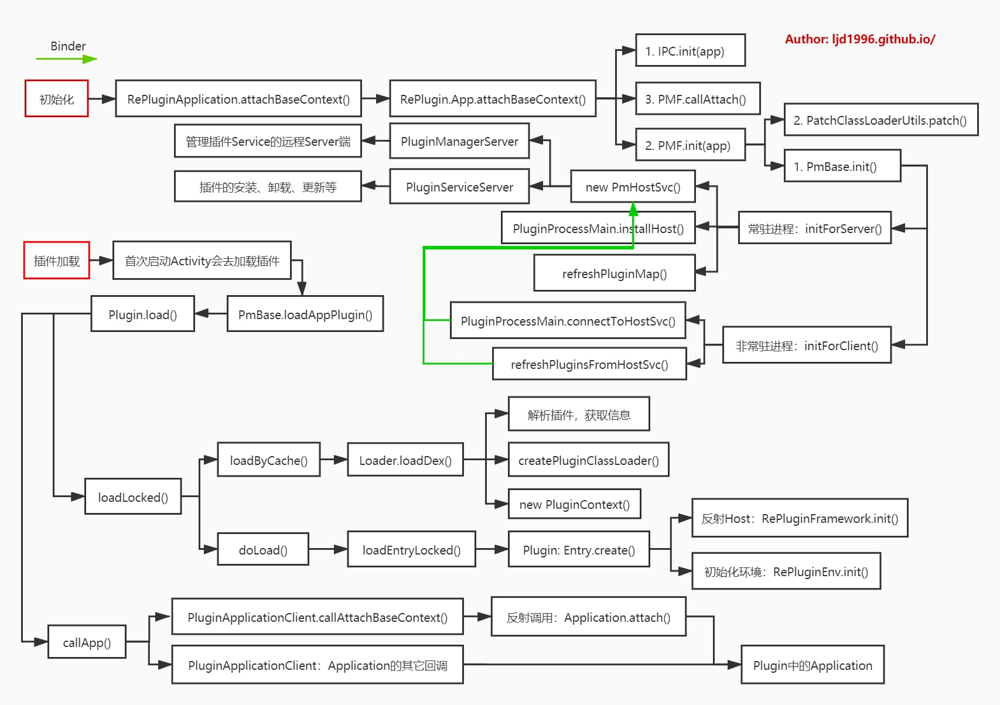

概述 RePlugin是360在2017年推出的插件化框架，其目的是让尽可能多的模块变成插件。RePlugin与其他插件化的特色在于它只Hook住了ClassLoader，One Hook这个坚持，最大程度保证了稳定性、兼容性和可维护性。
RePlugin项目地址：RePlugin ，不过RePlugin上次更新已经是2019年7月了，且其没有支持androidx，网上有一个androidx版本的RePlugin，地址：replugin-androidx 。虽然RePlugin已经停更，但是还是挺值得研究一下的。
详细使用教程可以看官网WIKI 以及Sample示例
注意事项
宿主开启了MultiDex后，可能会导致打包时报错：Cannot fit requested classes in the main-dex file，当我把gradle插件版本从3.4.2升级到3.5.2后，打包成功；
插件工程replugin-plugin-lib不支持高版本的gradle插件，我测试的3.4.2可以支持，如果用了高版本的gradle插件，则可以通过手动让BaseActivity继承自PluginXXXActivity；
不支持androidx；
gradle在编译时会根据assets/plugins目录下的jar文件生成内置插件的json文件，当内置插件有了修改时，最好先clean project。
RePlugin版本目前最新是2.3.3，WIKI上的示例使用的不是最新版本，建议在项目中使用最新版本。
对于replugin-plugin-gradle插件在高版本gradle或者AndroidX上没有在编译器替换相关类的问题，可以参考下面关于replugin-plugin-gradle插件源码的解析去临时解决这个问题（不包括在gradle更高版本上某些编译报错的问题）。
项目结构 replugin-host-gradle 对应com.qihoo360.replugin:replugin-host-gradle:xxx依赖，主要负责在主程序的编译期中生产各类文件：
扫描内置的插件目录assets/plugins目录，解析插件文件生成包含文件名、包名、版本、路径的plugins-builtin.json文件，这个文件的路径在build/intermediates/merged_assets/debug/out/plugins-builtin.json目录：
1 2 3 4 5 6 7 8 9 10 11 12 13 14 15 16 17 18 19 20 [ { "high" : null , "frm" : null , "ver" : 104 , "low" : null , "pkg" : "com.qihoo360.replugin.sample.demo1" , "path" : "plugins/demo1.jar" , "name" : "demo1" }, { "high" : null , "frm" : null , "ver" : 1 , "low" : null , "pkg" : "com.hearing.plugin1" , "path" : "plugins/plugin1.jar" , "name" : "plugin1" } ]
根据用户的配置文件，生成HostBuildConfig类，位于build/generated/source/buildConfig/debug/com/qihoo360/replugin/gen/RePluginHostConfig.java，方便插件框架读取并自定义其属性，如：进程数、各类型占位坑的数量、是否使用AppCompat库、Host版本、pulgins-builtin.json文件名、内置插件文件名等。
自动生成带Activity，Service，ContentProvider坑位的 AndroidManifest.xml文件，文件中带有如：
1 2 3 4 5 6 7 8 9 10 11 12 13 14 15 16 17 18 19 20 21 22 <activity android:theme ="@style/Theme.AppCompat" android:name ="com.qihoo360.replugin.sample.host.loader.a.ActivityN1STTS0" android:exported ="false" android:screenOrientation ="portrait" android:configChanges ="keyboard|keyboardHidden|orientation|screenSize" /> <provider android:name ="com.hearing.host.loader.p.Provider1" android:exported ="false" android:process =":loader1" android:authorities ="com.hearing.host.loader.p.pr1" /> <service android:name ="com.hearing.host.loader.s.Service1" android:exported ="false" android:process =":loader1" /> <provider android:name ="com.qihoo360.replugin.component.process.ProcessPitProviderP0" android:exported ="false" android:process =":p0" android:authorities ="com.hearing.host.loader.p.mainN100" />
replugin-host-library 对应com.qihoo360.replugin:replugin-host-lib:xxx依赖，是一个Java工程，由主程序负责引入，是RePlugin的核心工程，负责初始化、加载、启动、管理插件等。
replugin-plugin-gradle 对应com.qihoo360.replugin:replugin-plugin-gradle:xxx ，是一个Gradle插件，由插件负责引入，主要负责在插件的编译期中，使用Transfrom API和Javassist实现了编译期间动态的修改字节码文件，配置插件打包相关信息；动态替换插件工程中的继承基类，如下，修改Activity的继承、动态的将插件apk中调用LocalBroadcastManager的地方修改为Replugin中的PluginLocalBroadcastManager调用，动态修改ContentResolver和ContentProviderClient的调用修改成Replugin调用，动态的修改插件工程中所有调用Resource.getIdentifier方法的地方等。
1 2 3 4 5 6 7 8 9 10 11 def private static loaderActivityRules = [ 'android.app.Activity' : 'com.qihoo360.replugin.loader.a.PluginActivity' , 'android.app.TabActivity' : 'com.qihoo360.replugin.loader.a.PluginTabActivity' , 'android.app.ListActivity' : 'com.qihoo360.replugin.loader.a.PluginListActivity' , 'android.app.ActivityGroup' : 'com.qihoo360.replugin.loader.a.PluginActivityGroup' , 'android.support.v4.app.FragmentActivity' : 'com.qihoo360.replugin.loader.a.PluginFragmentActivity' , 'android.support.v7.app.AppCompatActivity' : 'com.qihoo360.replugin.loader.a.PluginAppCompatActivity' , 'android.preference.PreferenceActivity' : 'com.qihoo360.replugin.loader.a.PluginPreferenceActivity' , 'android.app.ExpandableListActivity' : 'com.qihoo360.replugin.loader.a.PluginExpandableListActivity' ]
replugin-plugin-library 对应com.qihoo360.replugin:replugin-plugin-lib:xxx依赖，是一个Java工程，由插件端负责引入，主要提供通过“Java反射”来调用主程序中RePlugin Host Library的相关接口，并提供“双向通信”的能力，以及各种基类Activity等。
其中的RePlugin、RePluginInternal、PluginServiceClient都是反射宿主App：replugin-host-library中的RePlugin、RePluginInternal、PluginServiceClient类方法。
ClassLoader RePluginClassLoader RePluginClassLoader是宿主的ClassLoader，继承自PathClassLoader，其构造方法如下：
1 2 3 4 5 6 7 8 9 10 11 12 13 14 15 16 17 18 private final ClassLoader mOrig;private Method findResourceMethod;private Method findResourcesMethod;private Method findLibraryMethod;private Method getPackageMethod;public RePluginClassLoader (ClassLoader parent, ClassLoader orig) super ("" , "" , parent); mOrig = orig; copyFromOriginal(orig); initMethods(orig); }
在构造方法中，将原ClassLoader中的重要变量浅拷贝到RePluginClassLoader中，用于欺骗系统还处于原Loader，并且从原Loader中反射出常用方法，用于重载方法中使用。
RePluginClassLoader的初始化在RePlugin初始化时进行：
1 2 3 4 5 6 7 8 9 10 11 12 13 14 15 16 17 18 19 20 21 22 23 24 25 26 27 28 29 30 31 32 33 34 35 36 37 38 39 40 41 42 43 44 45 46 public class PatchClassLoaderUtils public static boolean patch (Application application) try { Context oBase = application.getBaseContext(); if (oBase == null ) { return false ; } Object oPackageInfo = ReflectUtils.readField(oBase, "mPackageInfo" ); if (oPackageInfo == null ) { return false ; } ClassLoader oClassLoader = (ClassLoader) ReflectUtils.readField(oPackageInfo, "mClassLoader" ); if (oClassLoader == null ) { return false ; } ClassLoader cl = RePlugin.getConfig().getCallbacks().createClassLoader(oClassLoader.getParent(), oClassLoader); ReflectUtils.writeField(oPackageInfo, "mClassLoader" , cl); Thread.currentThread().setContextClassLoader(cl); } catch (Throwable e) { e.printStackTrace(); return false ; } return true ; } }
此处patch的原理可以参考Android Application启动的原理 。
RePluginClassLoader中主要是重载了loadClass方法，它首先会尝试从PluginDexClassLoader中加载，加载失败才会使用原ClassLoader加载，代码如下：
1 2 3 4 5 6 7 8 9 10 11 12 13 14 @Override protected Class<?> loadClass(String className, boolean resolve) throws ClassNotFoundException { Class<?> c = null ; c = PMF.loadClass(className, resolve); if (c != null ) { return c; } try { c = mOrig.loadClass(className); return c; } catch (Throwable e) { } return super .loadClass(className, resolve); }
PluginDexClassLoader PluginDexClassLoader是插件的ClassLoader，继承自DexClassLoader，构造时持有了宿主的ClassLoader，其构造方法如下：
1 2 3 4 5 6 7 8 9 10 11 private final ClassLoader mHostClassLoader;private static Method sLoadClassMethod;private String mPluginName;public PluginDexClassLoader (PluginInfo pi, String dexPath, String optimizedDirectory, String librarySearchPath, ClassLoader parent) super (dexPath, optimizedDirectory, librarySearchPath, parent); mPluginName = pi.getName(); installMultiDexesBeforeLollipop(pi, dexPath, parent); mHostClassLoader = RePluginInternal.getAppClassLoader(); initMethods(mHostClassLoader); }
其初始化是在调用插件的相关组件时，通过Loader类的loadDex方法实例化的，每一个插件都会有一个PluginDexClassLoader，代码如下：
1 2 3 4 5 6 7 8 9 10 11 final boolean loadDex (ClassLoader parent, int load) mClassLoader = RePlugin.getConfig().getCallbacks().createPluginClassLoader(mPluginObj.mInfo, mPath, out, soDir, parent); synchronized (Plugin.FILENAME_2_DEX) { Plugin.FILENAME_2_DEX.put(mPath, new WeakReference<>(mClassLoader)); } mPkgContext = new PluginContext(mContext, android.R.style.Theme, mClassLoader, mPkgResources, mPluginName, this ); }
PluginDexClassLoader从宿主ClassLoader中反射获取loadClass方法，当自己的loadClass方法找不到类时，从宿主Loader中加载，代码如下：
1 2 3 4 5 6 7 8 9 10 11 12 13 14 15 16 17 18 19 20 21 22 23 24 25 26 27 28 29 30 31 32 33 34 35 36 37 38 39 40 41 42 43 44 45 46 47 48 49 50 51 52 53 54 55 56 @Override protected Class<?> loadClass(String className, boolean resolve) throws ClassNotFoundException { Class<?> pc = null ; ClassNotFoundException cnfException = null ; try { pc = super .loadClass(className, resolve); if (pc != null ) { return pc; } } catch (ClassNotFoundException e) { cnfException = e; if (PluginDexClassLoaderPatch.need2LoadFromHost(className)) { try { return loadClassFromHost(className, resolve); } catch (ClassNotFoundException e1) { cnfException = e1; } } else { } } if (RePlugin.getConfig().isUseHostClassIfNotFound()) { try { return loadClassFromHost(className, resolve); } catch (ClassNotFoundException e) { cnfException = e; } } if (cnfException != null ) { throw cnfException; } return null ; } private Class<?> loadClassFromHost(String className, boolean resolve) throws ClassNotFoundException { Class<?> c; try { c = (Class<?>) sLoadClassMethod.invoke(mHostClassLoader, className, resolve); } catch (IllegalAccessException e) { throw new ClassNotFoundException("Calling the loadClass method failed (IllegalAccessException)" , e); } catch (InvocationTargetException e) { throw new ClassNotFoundException("Calling the loadClass method failed (InvocationTargetException)" , e); } return c; }
思考 关于这种 Hook 系统 ClassLoader 的方式，是否可以修改成给宿主 PathClassLoader 加一个 parent ClassLoader 呢？这样根据 “双亲委派” 的逻辑，加上去的这个 parent ClassLoader 理论上也是能完成 RePlugin 想要做的事。
相关类 概述
RePlugin：RePlugin的对外入口类，提供install、uninstall、preload、startActivity、fetchPackageInfo、fetchComponentList，fetchClassLoader等等统一的方法入口，用户操作的主要是它。
RePlugin.App：RePlugin中的内部类，针对Application的入口类，所有针对插件Application的调用应从此类开始和初始化。
PMF：框架和主程序接口代码。
PmBase：在RePlugin中常用mPluginMgr变量表示，可以看作插件管理者。初始化插件、加载插件等一般都是从它开始。
PmHostSvc：class PmHostSvc extends IPluginHost.Stub，运行在Persistent进程，其它进程通过Binder与Persistent进程通信。
PluginManagerServer：插件管理器。用来控制插件的安装、卸载、获取等。运行在常驻进程中，其内有一个IPluginManagerServer mStub属性。
PluginContainers：插件容器管理中心。
PluginCommImpl：负责宿主与插件、插件间的互通，可通过插件的Factory直接调用，也可通过RePlugin来跳转，包含各种本地接口实现，如startActivity，getActivityInfo，loadPluginActivity等。
PluginLibraryInternalProxy：内部实现了真正startActivity的逻辑、还有插件Activity生命周期的接口。plugin-library中，通过“反射”调用的内部逻辑，以及host-library中直接调用startActivity等的逻辑实现。
PMF.java 1 2 3 4 5 6 7 8 9 10 11 12 13 14 PmBase sPluginMgr Context sContext setApplicationContext() getApplicationContext() init() callAppCreate() callAttach() addBuiltinModule() getLocal() getInternal() loadClass() forward() dump() stopService()
PmBase.java 1 2 3 4 5 6 7 8 9 10 11 12 13 14 15 16 17 18 19 20 21 22 class PmBase private final Context mContext; private final HashSet<String> mContainerActivities = new HashSet<String>(); private final HashSet<String> mContainerProviders = new HashSet<String>(); private final HashSet<String> mContainerServices = new HashSet<String>(); private ClassLoader mClassLoader; private final Map<String, Plugin> mPlugins = new ConcurrentHashMap<>(); private final HashMap<String, DynamicClass> mDynamicClasses = new HashMap<String, DynamicClass>(); private String mDefaultPluginName; private Plugin mDefaultPlugin; private PmHostSvc mHostSvc; PluginProcessPer mClient; PluginCommImpl mLocal; PluginLibraryInternalProxy mInternal; }
PmHostSvc.java 1 2 3 4 5 6 7 8 9 10 11 12 13 14 15 class PmHostSvc extends IPluginHost .Stub Context mContext; PmBase mPluginMgr; PluginServiceServer mServiceMgr; PluginManagerServer mManager; private boolean mNeedRestart; PluginReceiverProxy mReceiverProxy; @Override public IPluginManagerServer fetchManagerServer () throws RemoteException return mManager.getService(); } }
IPluginHost.aidl 1 2 3 4 5 6 7 8 9 10 11 12 13 14 15 16 17 18 19 20 21 22 23 24 25 26 27 28 29 30 31 32 33 34 35 36 37 38 39 40 41 42 43 44 45 46 47 48 49 50 51 52 53 54 55 56 57 58 59 60 61 62 63 64 65 66 67 68 69 70 interface IPluginHost void installBinder (String name, in IBinder binder) IBinder fetchBinder (String name) ; long fetchPersistentCookie () IPluginClient startPluginProcess (String plugin, int process, inout PluginBinderInfo info) ; String attachPluginProcess (String process, int index, in IBinder binder, String def) ; List<PluginInfo> listPlugins () ; void regActivity (int index, String plugin, String container, String activity) void unregActivity (int index, String plugin, String container, String activity) void regService (int index, String plugin, String service) void unregService (int index, String plugin, String service) void regPluginBinder (in PluginBinderInfo info, IBinder binder) void unregPluginBinder (in PluginBinderInfo info, IBinder binder) void regReceiver (String plugin, in Map receiverFilterMap) void unregReceiver () void onReceive (String plugin, String receiver, in Intent intent) int sumBinders (int index) void updatePluginInfo (in PluginInfo info) PluginInfo pluginDownloaded (String path) ; boolean pluginUninstalled (in PluginInfo info) boolean pluginExtracted (String path) oneway void sendIntent2Process (String target, in Intent intent) ; oneway void sendIntent2Plugin (String target, in Intent intent) ; void sendIntent2ProcessSync (String target, in Intent intent) void sendIntent2PluginSync (String target, in Intent intent) boolean isProcessAlive (String name) IBinder queryPluginBinder (String plugin, String binder) ; List queryPluginsReceiverList (in Intent intent) ; IPluginServiceServer fetchServiceServer () ; IPluginManagerServer fetchManagerServer () ; int getTaskAffinityGroupIndex (String taskAffinity) int getPidByProcessName (String processName) String getProcessNameByPid (int pid) ; String dump () ; }
IPluginManagerServer.aidl 1 2 3 4 5 6 7 8 9 10 11 12 13 14 15 16 17 18 19 20 21 22 23 24 25 26 27 28 29 30 31 32 33 34 35 36 37 38 39 40 41 42 43 44 45 46 47 48 49 50 51 52 53 54 55 56 57 58 59 60 61 62 63 64 65 66 67 68 69 70 71 72 73 74 75 76 77 78 79 80 81 82 83 84 interface IPluginManagerServer PluginInfo install (String path) ; boolean uninstall (in PluginInfo info) List<PluginInfo> load () ; List<PluginInfo> updateAll () ; void updateUsed (String pluginName, boolean used) PluginRunningList getRunningPlugins () ; boolean isPluginRunning (String pluginName, String process) void syncRunningPlugins (in PluginRunningList list) void addToRunningPlugins (String processName, int pid, String pluginName) String[] getRunningProcessesByPlugin(String pluginName); }
PluginManagerServer.java 1 2 3 4 5 6 7 8 9 10 11 12 13 14 15 16 17 18 19 20 21 22 23 24 25 26 27 28 29 30 31 32 33 34 35 36 37 38 39 40 41 42 43 44 45 public class PluginManagerServer private IPluginManagerServer mStub; public PluginManagerServer (Context context) mContext = context; mStub = new Stub(); } public IPluginManagerServer getService () return mStub; } private PluginInfo installLocked (String path) } private List<PluginInfo> loadLocked () } private class Stub extends IPluginManagerServer .Stub @Override public PluginInfo install (String path) throws RemoteException synchronized (LOCKER) { return PluginManagerServer.this .installLocked(path); } } @Override public List<PluginInfo> load () throws RemoteException synchronized (LOCKER) { return PluginManagerServer.this .loadLocked(); } } } }
PluginManagerProxy.java 1 2 3 4 5 6 7 8 9 10 11 12 13 14 15 16 17 18 public class PluginManagerProxy private static IPluginManagerServer sRemote; public static void connectToServer (IPluginHost host) throws RemoteException if (sRemote != null ) { return ; } sRemote = host.fetchManagerServer(); } }
相关概念 唯一Hook 在应用启动的时候，Replugin使用RepluginClassLoader将系统的PathClassLoader替换掉，并且只篡改了loadClass方法的行为，用于加载插件的类。每一个插件都会有一个PluginDexClassLoader，RepluginClassLoader会调用插件的PluginDexClassLoader来加载插件中的类与资源。
UI/Persistent进程 Replugin启动时会默认启动两个进程，一个是UI进程，一个是Persistent进程(常驻进程)，在IPluginManager接口中定义了两个常量PROCESS_UI和PROCESS_PERSIST来表示这两个进程。
Replugin默认会使用常驻进程作为Server端，其他插件进程和宿主进程全部属于Client端。当然如果修改不使用常驻进程，那么宿主的主进程将作为插件管理进程，而不管是使用宿主进程还是使用默认的常驻进程，Server端其实就是创建了一个运行在该进程中的Provider，通过Provider的query方法返回了Binder对象来实现多进程直接的的沟通和数据共享，或者说是插件之间和宿主之间沟通和数据共享，插件的安装，卸载，更新，状态判断等全部都在这个Server端完成。
UI进程就是程序的主进程。
Persistent进程是一个服务器进程，默认用:GuardService来标识。所有其他的进程在启动组件的时候都会通过PmHostSvc与这个进程通信，以下是Persistent进程中运行的两个重要服务:
PluginManagerServer 用于插件的管理，比如加载插件，更新插件信息，签名验证，版本检查，插件卸载等
PluginServiceServer 用于Service的启动调度等工作
坑位 坑位的作用需要与RepluginClassLoader配合实现，所谓坑位就是预先在Host的Manifest中注册的一些组件（Activity, Service, Content Provider，没有Broadcast Receiver)，这些坑位组件的代码都是由gradle插件在编译时生成的。
在启动插件的组件时，会用这些坑位去替代要启动的组件，并且会建立一个坑位与真实组件之间的对应关系（用ActivityState表示)，然后在加载类的时候RepluginClassLoader会根据前文提到的被篡改过的行为偷偷使用插件的PluginDexClassLoader加载要启动的真实组件类，骗过了系统，这就是唯一hook点的作用。
RePlugin初始化 Host在启动的时候会先进行UI进程的初始化工作，但在进行到中途的时候会巧妙的将Persistent进程启动起来，以提供服务，不然UI进程将无法正常启动起来，因为有很多东西是运行在Persistent进程的。
初始化 入口位置在RePluginApplication#attachBaseContext()，接着调用了RePlugin.App.attachBaseContext()方法：
1 2 3 4 5 6 7 8 9 10 11 12 13 14 15 16 17 18 19 20 21 22 23 24 25 26 27 28 29 30 31 public static void attachBaseContext (Application app, RePluginConfig config) if (sAttached) { return ; } RePluginInternal.init(app); sConfig = config; sConfig.initDefaults(app); IPC.init(app); HostConfigHelper.init(); AppVar.sAppContext = app; PluginStatusController.setAppContext(app); PMF.init(app); PMF.callAttach(); sAttached = true ; }
IPC.init方法主要就是通过proc文件获取当前进程名、进程id和宿主包名，然后设置常驻进程的名称，最后标记当前进程是否是ui进程和是不是常驻进程，源码在进程管理部分会给出。
PMF.init(app)方法如下：
1 2 3 4 5 6 7 8 9 10 11 public static final void init (Application application) setApplicationContext(application); PluginManager.init(application); sPluginMgr = new PmBase(application); sPluginMgr.init(); PatchClassLoaderUtils.patch(application); }
PluginManager.init方法会获取当前进程的index，这个index是RePlugin自定义的，其取值在下面会讲到：
1 2 3 4 5 6 static final void init (Context context) Tasks.init(); sUid = android.os.Process.myUid(); sPluginProcessIndex = evalPluginProcess(IPC.getCurrentProcessName()); }
PmBase和它内部引用的其他对象掌握了Replugin中很多重要的功能，例如：分配坑位、初始化插件信息、Clent端连接Server端、加载插件、更新插件、删除插件、等等。其构造方法如下：
1 2 3 4 5 6 7 8 9 10 11 12 13 14 15 16 17 18 19 20 21 22 23 24 25 26 27 PmBase(Context context) { mContext = context; if (PluginManager.sPluginProcessIndex == IPluginManager.PROCESS_UI || PluginManager.isPluginProcess()) { String suffix; if (PluginManager.sPluginProcessIndex == IPluginManager.PROCESS_UI) { suffix = "N1" ; } else { suffix = "" + PluginManager.sPluginProcessIndex; } mContainerProviders.add(IPC.getPackageName() + CONTAINER_PROVIDER_PART + suffix); mContainerServices.add(IPC.getPackageName() + CONTAINER_SERVICE_PART + suffix); } mClient = new PluginProcessPer(context, this , PluginManager.sPluginProcessIndex, mContainerActivities); mLocal = new PluginCommImpl(context, this ); mInternal = new PluginLibraryInternalProxy(this ); }
PmBase的构造主要做了4件事件：
根据当前进程类型，拼接坑位provider和Service所对应名称并存入不同的HashSet中，PmBase类中处理保存了Provider、Service、Activitiy的坑位信息，这些名字全部都是Replugin在编译的时候在AndroidManifest.xml中声明的坑位名字：mContainerActivities，mContainerProviders，mContainerServices。
创建了一个叫PluginProcessPer的类，它是一个Binder对象，它代表了“当前Clent端”，使用它来和Server端进行通信，这个类的构造中有两个类，一个是PluginContainers，用来管理Activity坑位信息的容器，初始化了多种不同启动模式和样式Activity的坑位信息。另一个PluginServiceServer类，这个类是Replugin中的一个核心类，主要负责了对Service的提供和调度工作，例如startService、stopService、bindService、unbindService全部都由这个类管理。
创建了一个叫PluginCommImpl的类,负责宿主与插件、插件间的互通，很多对提供方法都经过这里中转或者最终调到这里。
创建了一个PluginLibraryInternalProxy类，Replugin框架中内部逻辑使用的很多方法都在这里，包括插件中通过“反射”调用的内部逻辑如PluginActivity类的调用、Factory2等。
PmBase.init()方法会根据不同进程进行不同的操作，其逻辑如下：
1 2 3 4 5 6 7 8 9 10 11 12 13 14 15 16 17 18 19 20 21 22 23 24 25 26 27 28 void init () if (HostConfigHelper.PERSISTENT_ENABLE) { if (IPC.isPersistentProcess()) { initForServer(); } else { initForClient(); } } else { if (IPC.isUIProcess()) { initForServer(); PMF.sPluginMgr.attach(); } else { initForClient(); } } PluginTable.initPlugins(mPlugins); }
Persistent进程启动 initForServer 在UI进程启动流程中，可以看到如果是Persistent进程，则走如下逻辑：
1 2 3 4 5 6 7 8 9 10 11 12 13 14 15 16 17 18 19 20 21 22 23 24 25 private final void initForServer () mHostSvc = new PmHostSvc(mContext, this ); PluginProcessMain.installHost(mHostSvc); StubProcessManager.schedulePluginProcessLoop(StubProcessManager.CHECK_STAGE1_DELAY); mAll = new Builder.PxAll(); Builder.builder(mContext, mAll); refreshPluginMap(mAll.getPlugins()); try { List<PluginInfo> l = PluginManagerProxy.load(); if (l != null ) { refreshPluginMap(l); } } catch (RemoteException e) { } }
PmHostSvc的构造方法：
1 2 3 4 5 6 7 8 class PmHostSvc extends IPluginHost .Stub PmHostSvc(Context context, PmBase packm) { mContext = context; mPluginMgr = packm; mServiceMgr = new PluginServiceServer(context); mManager = new PluginManagerServer(context); } }
PluginProcessMain.installHost 在Persistent进程中会通过PluginProcessMain.installHost(mHostSvc)连接到IPluginManagerServer，但因为IPluginManagerServer就运行在当前进程，因此这里不会进行Binder通信，而是直接调用PmHostSvc端fetchManagerServer方法。
1 2 3 4 5 6 7 8 9 10 11 12 13 14 15 16 17 18 19 20 21 22 23 24 25 26 private static IPluginHost sPluginHostLocal;static final void installHost (IPluginHost host) sPluginHostLocal = host; try { PluginManagerProxy.connectToServer(sPluginHostLocal); } catch (RemoteException e) { } } public static void connectToServer (IPluginHost host) throws RemoteException if (sRemote != null ) { return ; } sRemote = host.fetchManagerServer(); } @Override public IPluginManagerServer fetchManagerServer () throws RemoteException return mManager.getService(); }
接下来看看PluginManagerServer#getService方法：
1 2 3 4 5 6 7 8 9 10 11 12 13 14 15 16 17 public class PluginManagerServer private IPluginManagerServer mStub; public PluginManagerServer (Context context) mContext = context; mStub = new Stub(); } public IPluginManagerServer getService () return mStub; } private class Stub extends IPluginManagerServer .Stub } }
可以看出IPluginManagerServer也是一个AIDL文件，内部有许多操作插件的方法，例如安装，卸载插件等，也就是说关于插件的所有操作都在Server端吧。
PluginManagerProxy.load 1 2 3 4 5 6 7 8 9 10 11 12 13 14 15 16 17 18 19 20 21 22 23 24 25 26 27 28 29 30 31 32 33 34 35 36 37 38 39 40 41 42 43 44 45 46 47 48 49 50 51 52 53 54 55 56 57 58 59 60 61 62 63 64 65 66 67 68 69 70 71 72 73 74 75 76 77 78 79 80 81 82 83 84 85 86 87 88 89 90 91 92 93 94 public class PluginManagerProxy private static IPluginManagerServer sRemote; public static List<PluginInfo> load () throws RemoteException return sRemote.load(); } } public class PluginManagerServer private PluginInfoList mList = new PluginInfoList(); private List<PluginInfo> loadLocked () if (!mList.load(mContext)) { return null ; } return updateAllLocked(); } private List<PluginInfo> updateAllLocked () updateAllIfNeeded(); return mList.cloneList(); } private void updateAllIfNeeded () int updateNum = 0 ; for (PluginInfo pi : mList) { if (updateIfNeeded(pi)) { updateNum++; } } if (updateNum > 0 ) { mList.save(mContext); } } private boolean updateIfNeeded (PluginInfo curInfo) if (isPluginRunningLocked(curInfo.getName(), null )) { return false ; } if (curInfo.isNeedUninstall()) { return uninstallNow(curInfo.getPendingDelete()); } else if (curInfo.isNeedUpdate()) { updateNow(curInfo, curInfo.getPendingUpdate()); return true ; } else if (curInfo.isNeedCover()) { updateNow(curInfo, curInfo.getPendingCover()); return true ; } else { return false ; } } private void updateNow (PluginInfo curInfo, PluginInfo newInfo) final boolean covered = newInfo.getIsPendingCover(); if (covered) { move(curInfo, newInfo); } else { delete(curInfo); } newInfo.setType(PluginInfo.TYPE_EXTRACTED); if (covered) { curInfo.setPendingCover(null ); newInfo.setIsPendingCover(false ); newInfo.setPath(newInfo.getApkFile().getPath()); } else { curInfo.update(newInfo); curInfo.setPendingUpdate(null ); } } private class Stub extends IPluginManagerServer .Stub @Override public List<PluginInfo> load () throws RemoteException synchronized (LOCKER) { return PluginManagerServer.this .loadLocked(); } } } }
顺着PluginManagerProxy.load()跟踪下去，最后真正做加载工作的是PluginInfoList.load()函数（只是加载插件信息）。
1 2 3 4 5 6 7 8 9 10 11 12 13 14 15 16 17 18 19 20 21 22 23 24 25 26 27 28 29 30 31 32 33 34 public class PluginInfoList implements Iterable <PluginInfo > private File getFile (Context context) final File d = context.getDir(Constant.LOCAL_PLUGIN_APK_SUB_DIR, 0 ); return new File(d, "p.l" ); } public boolean load (Context context) try { final File f = getFile(context); final String result = FileUtils.readFileToString(f, Charsets.UTF_8); if (TextUtils.isEmpty(result)) { return false ; } final JSONArray jArr = new JSONArray(result); for (int i = 0 ; i < jArr.length(); i++) { final JSONObject jo = jArr.optJSONObject(i); final PluginInfo pi = PluginInfo.createByJO(jo); if (pi == null ) { continue ; } addToMap(pi); } return true ; } catch (IOException e) { } catch (JSONException e) { } return false ; } }
小结 initForServer()方法的作用：
首先创建了一个PmHostSvc对象，这个类继承自IPluginHost.Stub，是一个IPluginHost类型的Binder对象，可以说所有的插件的管理工作都是直接或者间接由它处理的，PmHostSvc代表了Server端要处理的事情，也就是插件管理进程处理的事情。
在PmHostSvc的构造方法中又创建了两个对象，一个是PluginServiceServer，这个类是用来管理插件Service的远程Server端，还有一个是PluginManagerServer，这个类在创建的时候在构造中又创建了一个继承自IPluginServiceServer.Stub的Stub对象，Stub也是一个Binder对象，这个类掌管了所有对插件的的操作，例如插件的安装、加载、卸载、更新等等。
调用PluginProcessMain.installHost(mHostSvc)方法将PmHostSvc对象也就是IPluginHost类型赋值给PluginProcessMain中的字段sPluginHostLocal。接着调用了IPluginHost.fetchManagerServer()方法将PluginManagerServer中的Stub对象，也就是IPluginServiceServer类型的Binder对象赋值给PluginManagerProxy类中的字段sRemote，这个IPluginServiceServer类型的Binder对象掌握了对插件的安装、卸载、更新等等的操作。
PluginManagerProxy.load()则用来更新插件信息。
UI进程启动 initForClient Client(UI进程)的初始化如下：
1 2 3 4 5 6 7 private final void initForClient () PluginProcessMain.connectToHostSvc(); refreshPluginsFromHostSvc(); }
PluginProcessMain.connectToHostSvc 非常驻进程调用connectToHostSvc方法，获取常驻进程的IPluginHost：
1 2 3 4 5 6 7 8 9 10 11 12 13 14 15 16 17 18 19 20 21 22 23 24 25 26 27 28 29 30 31 32 33 34 35 36 37 38 39 40 41 42 43 44 45 46 47 48 49 50 51 52 53 54 55 56 57 58 59 60 61 62 63 64 private static IPluginHost sPluginHostRemote;static final void connectToHostSvc () Context context = PMF.getApplicationContext(); IBinder binder = PluginProviderStub.proxyFetchHostBinder(context); if (binder == null ) { System.exit(1 ); } try { binder.linkToDeath(new IBinder.DeathRecipient() { @Override public void binderDied () if (PluginManager.isPluginProcess()) { System.exit(0 ); } sPluginHostRemote = null ; PluginManagerProxy.disconnect(); } }, 0 ); } catch (RemoteException e) { System.exit(1 ); } sPluginHostRemote = IPluginHost.Stub.asInterface(binder); try { PluginManagerProxy.connectToServer(sPluginHostRemote); PluginManagerProxy.syncRunningPlugins(); } catch (RemoteException e) { System.exit(1 ); } PMF.sPluginMgr.attach(); } private static final IBinder proxyFetchHostBinder (Context context, String selection) Cursor cursor = null ; try { Uri uri = ProcessPitProviderPersist.URI; cursor = context.getContentResolver().query(uri, PROJECTION_MAIN, selection, null , null ); if (cursor == null ) { return null ; } while (cursor.moveToNext()) { } IBinder binder = BinderCursor.getBinder(cursor); return binder; } finally { CloseableUtils.closeQuietly(cursor); } }
当前进程尝试通过ContentResolver去访问ProcessPitProviderPersist以获取一个与Persistent进程通信的IBinder对象，但是ProcessPitProviderPersist在第一次被访问时并没有运行起来，于是Android系统会自动启动它。ProcessPitProviderPersist在Manifest中的注册代码：
1 2 3 4 5 <provider android:name ="com.qihoo360.replugin.component.process.ProcessPitProviderPersist" android:authorities ="${applicationId}.loader.p.main" android:exported ="false" android:process =":GuardService" />
于是Android系统立即通过ActivityManagerService向Zygote进程请求folk一个新的进程，ProcessPitProviderPersist就运行在这个进程中，这个进程就是Persistent进程了。
默认情况下，GuardService会被当作Persistent进程的名字，在IPC.init()函数中会用这个名字来判断当前进程是不是Persistent进程。
有很多坑位组件使用android:process=”:GuardService”属性，因此如果Persistent进程不小心被杀掉了，在任何需要启动这些坑位组件的地方都会将Persistent进程重新启动起来。
系统在启动新进程的时候，会在新进程中执行RepluginApplication的初始化，所以以上提到的流程都会在这个进程中执行一遍，但是因为在PmBase.init()函数中有一个条件判断IPC.isPersistentProcess()，Persistent进程会执行和UI进程不同的代码路径。
refreshPluginsFromHostSvc refreshPluginsFromHostSvc方法从HostSvc（插件管理所在进程）获取所有的插件信息，这些信息是在Persistent进程的启动流程中被加载的，接着会判断是否有更新，如果有插件已经更新了，会通过远程调用让PluginManagerServer重新加载插件：
1 2 3 4 5 6 7 8 9 10 11 12 13 14 15 16 17 18 19 20 21 22 23 24 25 26 27 28 29 30 31 32 33 34 35 36 37 38 private void refreshPluginsFromHostSvc () List<PluginInfo> plugins = null ; try { plugins = PluginProcessMain.getPluginHost().listPlugins(); } catch (Throwable e) { } List<PluginInfo> updatedPlugins = null ; if (isNeedToUpdate(plugins)) { try { updatedPlugins = PluginManagerProxy.updateAllPlugins(); } catch (RemoteException e) { e.printStackTrace(); } } if (updatedPlugins != null ) { refreshPluginMap(updatedPlugins); } else { refreshPluginMap(plugins); } } public static final IPluginHost getPluginHost () if (sPluginHostLocal != null ) { return sPluginHostLocal; } if (sPluginHostRemote == null ) { if (IPC.isPersistentProcess()) { throw new RuntimeException("插件框架未正常初始化" ); } connectToHostSvc(); } return sPluginHostRemote; }
小结 initForClient()方法的作用：
通过Provider的方式请求插件管理进程返回PmHostSvc这个Binder对象，接着通过PmHostSvc再得到PluginManagerServer这个Binder对象并把当前进程信息注册到Server端，最后通过得到的Binder对象来同步进程信息和更新插件信息。
callAttach PMF.callAttach()其实就是调用PmBase.callAttach()，首先将插件与当前进程关联起来，主要是将RepluginClassLoader和PluginCommImpl赋值给插件，它们会在插件真正加载运行时被用到。如果插件启动了自己的进程来运行，那么在插件的进程中会真正的去运行插件：
1 2 3 4 5 6 7 8 9 10 11 12 13 14 15 16 17 18 19 20 21 22 23 24 25 26 27 28 29 final void callAttach () mClassLoader = PmBase.class.getClassLoader(); for (Plugin p : mPlugins.values()) { p.attach(mContext, mClassLoader, mLocal); } if (PluginManager.isPluginProcess()) { if (!TextUtils.isEmpty(mDefaultPluginName)) { Plugin p = mPlugins.get(mDefaultPluginName); if (p != null ) { boolean rc = p.load(Plugin.LOAD_APP, true ); if (rc) { mDefaultPlugin = p; mClient.init(p); } } } } } final void attach (Context context, ClassLoader parent, PluginCommImpl manager) mContext = context; mParent = parent; mPluginManager = manager; }
总结 Replugin框架将插件的管理工作统一放在一个进程中，而其他进程需要通过插件管理进程返回的Binder对象来进行操作，这样既保证了信息的安全性，又可以分担其他进程的工作压力。框架的初始化主要创建了一些来管理和操作插件的Binder对象，然后通过区分进程来分别初始化插件管理进程和Clent进程各自要做的事情，插件管理进程主要是对插件信息的更新和维护，而Clent进程主要是需要获取到插件管理的进程的Binder对象来进行后续的操作等，在各进程出来完后会将所有插件的进行进行存储，然后hook系统ClassLoader，最后加载了默认插件。
整个流程跟系统AMS和ServiceManager有些类似。
插件安装原理 概述 简述一下系统PMS安装apk的过程：
系统扫描安装：在PMS被创建的时候，在构造方法中会扫描固定几个文件夹，例如：/system/framework、/system/app、/data/app等目录，然后为其中的apk文件创建一个PackageParser对象并执行该对象的parsePackage方法去解析这个apk文件，主要是解析AndroidManifest.xml，并封装PackageParser.Package对象返回，接着释放apk文件的lib库，优化dex文件，最后将解析得到的数据缓存起来，例如四大组件，Rermission等，系统扫描安装的大概步骤就是这样。
调用PMS接口安装：入口是PMS的installPackage，它将apk复制到/data/app目录下，并调用解析和释放apk的方法，最后会发送一个广播通知安装完成。
Replugin中的插件分为内置插件和外置插件：
内置的插件的安装时在初始化的时候就自动安装和加载了，在插件管理进程初始化的时候会扫描assest目录下的一个叫plugins-builtin.json的文件，并将插件信息封装成Plugin对象存入PmBase中
外置插件的安装需要调用Replugin.install()方法来安装插件，这个过程和内置插件类似，区别就是内置插件是通过assest目录下的json文件来生成插件对象，外置插件则是通过获取插件apk的PackageInfo来生成插件对象，但是并不会处理apk中的dex、so库、资源等，只有当真正使用这个插件中的类时才会去真正的解析加载这个插件。
安装入口 入口是Replugin.install()方法：
1 2 3 4 5 6 7 8 9 10 11 12 13 14 15 16 17 18 19 20 21 22 23 24 25 26 27 28 29 30 31 32 33 34 35 public static PluginInfo install (String path) return MP.pluginDownloaded(path); } public static final PluginInfo pluginDownloaded (String path) PluginInfo info = PluginProcessMain.getPluginHost().pluginDownloaded(path); if (info != null ) { RePlugin.getConfig().getEventCallbacks().onInstallPluginSucceed(info); } return info; } public PluginInfo pluginDownloaded (String path) throws RemoteException PluginInfo pi; String fn = new File(path).getName(); if (fn.startsWith("p-n-" ) || fn.startsWith("v-plugin-" ) || fn.startsWith("plugin-s-" ) || fn.startsWith("p-m-" )) { pi = pluginDownloadedForPn(path); } else { pi = mManager.getService().install(path); } if (pi != null ) { syncInstalledPluginInfo2All(pi); } return pi; }
安装插件 执行安装的是mManager.getService().install(path)，这个mManager是PluginManagerServer类型，它在PmHostSvc的构造方法中被创建，是用来管理插件的安装、卸载、更新、获取等功能。
1 2 3 4 5 6 7 8 9 10 11 12 13 14 15 16 17 18 19 20 21 22 23 24 25 26 27 28 29 30 31 32 33 34 35 36 37 38 39 40 41 42 43 44 45 46 47 48 49 50 51 52 53 54 55 56 57 58 59 60 61 62 63 64 65 66 67 68 69 70 71 public IPluginManagerServer getService () return mStub; } private class Stub extends IPluginManagerServer .Stub @Override public PluginInfo install (String path) throws RemoteException synchronized (LOCKER) { return PluginManagerServer.this .installLocked(path); } } } private PluginInfo installLocked (String path) final boolean verifySignEnable = RePlugin.getConfig().getVerifySign(); final int flags = verifySignEnable ? PackageManager.GET_META_DATA | PackageManager.GET_SIGNATURES : PackageManager.GET_META_DATA; PackageInfo pi = mContext.getPackageManager().getPackageArchiveInfo(path, flags); if (pi == null ) { RePlugin.getConfig().getEventCallbacks().onInstallPluginFailed(path, RePluginEventCallbacks.InstallResult.READ_PKG_INFO_FAIL); return null ; } if (verifySignEnable) { if (!verifySignature(pi, path)) { return null ; } } PluginInfo instPli = PluginInfo.parseFromPackageInfo(pi, path); instPli.setType(PluginInfo.TYPE_NOT_INSTALL); PluginInfo curPli = MP.getPlugin(instPli.getName(), false ); if (curPli != null ) { final int checkResult = checkVersion(instPli, curPli); if (checkResult < 0 ) { RePlugin.getConfig().getEventCallbacks().onInstallPluginFailed(path, RePluginEventCallbacks.InstallResult.VERIFY_VER_FAIL); return null ; } else if (checkResult == 0 ){ instPli.setIsPendingCover(true ); } } if (!copyOrMoveApk(path, instPli)) { RePlugin.getConfig().getEventCallbacks().onInstallPluginFailed(path, RePluginEventCallbacks.InstallResult.COPY_APK_FAIL); return null ; } PluginNativeLibsHelper.install(instPli.getPath(), instPli.getNativeLibsDir()); if (curPli != null ) { updateOrLater(curPli, instPli); } else { mList.add(instPli); } mList.save(mContext); return instPli; }
更新插件 更新的方法updateOrLater如下：
1 2 3 4 5 6 7 8 9 10 11 12 13 14 15 16 17 18 19 20 21 22 23 24 25 26 27 28 29 30 31 32 33 34 35 36 37 38 39 40 41 42 43 44 45 46 47 48 49 50 51 52 53 54 55 56 57 58 59 60 61 62 63 64 65 66 67 68 private void updateOrLater (PluginInfo curPli, PluginInfo instPli) PluginInfo curUpdatePli = curPli.getPendingUpdate(); if (curUpdatePli != null ) { updatePendingUpdate(curPli, instPli, curUpdatePli); return ; } if (RePlugin.isPluginRunning(curPli.getName())) { if (instPli.getVersion() > curPli.getVersion()) { curPli.setPendingUpdate(instPli); curPli.setPendingDelete(null ); curPli.setPendingCover(null ); } else if (instPli.getVersion() == curPli.getVersion()){ curPli.setPendingCover(instPli); curPli.setPendingDelete(null ); } instPli.setParentInfo(curPli); } else { updateNow(curPli, instPli); } } private void updatePendingUpdate (PluginInfo curPli, PluginInfo instPli, PluginInfo curUpdatePli) if (curUpdatePli.getVersion() < instPli.getVersion()) { curPli.setPendingUpdate(instPli); instPli.setParentInfo(curPli); try { FileUtils.forceDelete(new File(curUpdatePli.getPath())); } catch (IOException e) { if (LogRelease.LOGR) { e.printStackTrace(); } } } } private void updateNow (PluginInfo curInfo, PluginInfo newInfo) final boolean covered = newInfo.getIsPendingCover(); if (covered) { move(curInfo, newInfo); } else { delete(curInfo); } newInfo.setType(PluginInfo.TYPE_EXTRACTED); if (covered) { curInfo.setPendingCover(null ); newInfo.setIsPendingCover(false ); newInfo.setPath(newInfo.getApkFile().getPath()); } else { curInfo.update(newInfo); curInfo.setPendingUpdate(null ); } }
通知更新内存 install结束后，接着看syncPluginInfo2All方法：
1 2 3 4 5 6 7 8 9 10 11 12 13 14 15 16 17 18 19 20 21 22 23 24 25 26 27 28 29 30 31 32 33 34 35 36 37 38 39 40 41 42 43 44 45 46 47 48 49 50 private void syncInstalledPluginInfo2All (PluginInfo pi) PluginInfo needToSyncPi; PluginInfo parent = pi.getParentInfo(); if (parent != null ) { needToSyncPi = parent; } else { needToSyncPi = pi; } mPluginMgr.newPluginFound(needToSyncPi, false ); Intent intent = new Intent(PmBase.ACTION_NEW_PLUGIN); intent.putExtra(RePluginConstants.KEY_PERSIST_NEED_RESTART, mNeedRestart); intent.putExtra("obj" , (Parcelable) needToSyncPi); IPC.sendLocalBroadcast2AllSync(mContext, intent); } final void newPluginFound (PluginInfo info, boolean persistNeedRestart) PluginTable.updatePlugin(info); insertNewPlugin(info); PluginStatusController.setStatus(info.getName(), info.getVersion(), PluginStatusController.STATUS_OK); if (IPC.isPersistentProcess()) { persistNeedRestart = mNeedRestart; } Intent intent = new Intent(RePluginConstants.ACTION_NEW_PLUGIN); intent.putExtra(RePluginConstants.KEY_PLUGIN_INFO, (Parcelable) info); intent.putExtra(RePluginConstants.KEY_PERSIST_NEED_RESTART, persistNeedRestart); intent.putExtra(RePluginConstants.KEY_SELF_NEED_RESTART, mNeedRestart); LocalBroadcastManager.getInstance(mContext).sendBroadcast(intent); }
注册PmBase.ACTION_NEW_PLUGIN监听的代码，在RePluginApplication的onCreate方法中调用：
1 2 3 4 5 6 7 8 9 10 11 12 13 14 15 16 17 18 19 20 21 22 23 24 25 26 27 28 29 30 31 32 33 34 35 36 37 38 39 if (!IPC.isPersistentProcess()) { IntentFilter intentFilter = new IntentFilter(); intentFilter.addAction(ACTION_NEW_PLUGIN); intentFilter.addAction(ACTION_UNINSTALL_PLUGIN); try { LocalBroadcastManager.getInstance(mContext).registerReceiver(mBroadcastReceiver, intentFilter); } catch (Exception e) { if (LOGR) { LogRelease.e(PLUGIN_TAG, "p m hlc a r e: " + e.getMessage(), e); } } } private BroadcastReceiver mBroadcastReceiver = new BroadcastReceiver() { @Override public void onReceive (Context context, Intent intent) String action = intent.getAction(); if (TextUtils.isEmpty(action)) { return ; } if (action.equals(intent.getAction())) { PluginInfo info = intent.getParcelableExtra("obj" ); if (info != null ) { switch (action) { case ACTION_NEW_PLUGIN: newPluginFound(info, intent.getBooleanExtra(RePluginConstants.KEY_PERSIST_NEED_RESTART, false )); break ; case ACTION_UNINSTALL_PLUGIN: pluginUninstalled(info); break ; } } } } };
Activity启动流程 启动一个Activity的入口函数是Replugin.startActivity()，然后调用Factory.startActivityWithNoInjectCN，再经过PluginCommImpl.startActivivty()，最终来到PluginLibraryInternalProxy.startActivity()，这里是真正开始工作的地方，接下来按照顺序解析这一流程。
准备工作 在启动之前，如果有必要，需要先下载插件，可以在Application中使用继承RePluginCallbacks的自定义回调来处理下载插件的需求：
1 2 3 4 5 6 7 if (download) { if (PluginTable.getPluginInfo(plugin) == null ) { if (isNeedToDownload(context, plugin)) { return RePlugin.getConfig().getCallbacks().onPluginNotExistsForActivity(context, plugin, intent, process); } } }
如果插件状态不正确，或者首次加载大插件，会通过回调让用户处理，用户可以可以在回调里定制自己的行为，比如弹出提示框，加载进度条等。
1 2 3 4 5 6 7 8 9 10 11 12 if (PluginStatusController.getStatus(plugin) < PluginStatusController.STATUS_OK) { return RePlugin.getConfig().getCallbacks().onPluginNotExistsForActivity(context, plugin, intent, process); } if (!RePlugin.isPluginDexExtracted(plugin)) { PluginDesc pd = PluginDesc.get(plugin); if (pd != null && pd.isLarge()) { return RePlugin.getConfig().getCallbacks().onLoadLargePluginForActivity(context, plugin, intent, process); } }
然后会调用PluginCommImpl.loadPluginActivity来寻找坑位Activity。如果是第一次去获取信息，会首先去加载插件的Dex文件以及资源等，并创建PluginDexClassLoader。
1 2 3 4 5 6 7 8 9 10 11 12 13 14 15 16 17 18 19 20 21 public ComponentName loadPluginActivity (Intent intent, String plugin, String activity, int process) PluginBinderInfo info = new PluginBinderInfo(PluginBinderInfo.ACTIVITY_REQUEST); ActivityInfo ai = getActivityInfo(plugin, activity, intent); intent.putExtra(INTENT_KEY_THEME_ID, ai.theme); if (ai.processName != null ) { process = PluginClientHelper.getProcessInt(ai.processName); } IPluginClient client = MP.startPluginProcess(plugin, process, info); container = client.allocActivityContainer(plugin, process, ai.name, intent); PmBase.cleanIntentPluginParams(intent); return new ComponentName(IPC.getPackageName(), container); }
插件加载 PluginCommImpl.getActivityInfo调用PmBase.loadAppPlugin获取插件对象，Replugin 是支持使用 IntentFilter 来启动组件的，完美支持原生特性。
1 2 3 4 5 6 7 8 9 10 11 12 13 14 15 16 17 18 19 20 21 22 23 24 25 26 27 28 29 30 31 32 33 34 35 36 37 38 39 40 41 42 43 44 45 public ActivityInfo getActivityInfo (String plugin, String activity, Intent intent) Plugin p = mPluginMgr.loadAppPlugin(plugin); ActivityInfo ai = null ; if (!TextUtils.isEmpty(activity)) { ai = p.mLoader.mComponents.getActivity(activity); } else { ai = IntentMatcherHelper.getActivityInfo(mContext, plugin, intent); } return ai; } final Plugin loadAppPlugin (String plugin) return loadPlugin(mPlugins.get(plugin), Plugin.LOAD_APP, true ); } final Plugin loadPlugin (Plugin p, int loadType, boolean useCache) if (p == null ) { return null ; } if (!p.load(loadType, useCache)) { return null ; } return p; } final boolean load (int load, boolean useCache) PluginInfo info = mInfo; boolean rc = loadLocked(load, useCache); if (load == LOAD_APP && rc) { callApp(); } if (rc && mInfo != info) { UpdateInfoTask task = new UpdateInfoTask((PluginInfo) mInfo.clone()); Tasks.post2Thread(task); } return rc; }
PmBase.loadAppPlugin会最终调用Plugin.loadLocked()函数，这个函数有两个参数，第一个是加载类型，一共有四种加载类型，在这里使用的是Plugin.LOAD_APP，因为运行插件需要所有的东西。第二个参数是是否使用缓存，通常情况下我们会现在缓存中查找插件信息，这样会更快。
1 2 3 4 5 6 7 8 9 10 11 12 13 14 15 16 17 18 19 20 21 22 23 24 25 26 27 28 29 private boolean loadLocked (int load, boolean useCache) if (useCache) { boolean result = loadByCache(load); if (result) { return true ; } } PluginCommImpl manager = mPluginManager; boolean rc = doLoad(logTag, context, parent, manager, load); if (rc) { try { PluginManagerProxy.addToRunningPluginsNoThrows(mInfo.getName()); } catch (Throwable e) { } return true ; } File odex = mInfo.getDexFile(); if (odex.exists()) { odex.delete(); } rc = doLoad(logTag, context, parent, manager, load); return true ; }
Plugin.doLoad()用来加载插件的Dex文件，资源，以及so文件等等。
1 2 3 4 5 6 7 8 9 10 11 12 13 14 15 16 17 18 19 20 21 22 23 private final boolean doLoad (String tag, Context context, ClassLoader parent, PluginCommImpl manager, int load) if (mLoader == null ) { mLoader = new Loader(context, mInfo.getName(), mInfo.getPath(), this ); if (!mLoader.loadDex(parent, load)) { return false ; } try { PluginManagerProxy.updateUsedIfNeeded(mInfo.getName(), true ); } catch (RemoteException e) { } if (load == LOAD_APP) { if (!loadEntryLocked(manager)) { return false ; } } } }
Loader.loadDex函数会获取Dex中的组件的信息，包括Manifest中的组件属性，比如进程属性，TaskAffinity属性，注册静态广播等等，这里值得重点强调的是PluginDexClassLoader在此被初始化了。
1 2 3 4 5 6 7 8 9 10 11 12 13 14 15 final boolean loadDex (ClassLoader parent, int load) try { mClassLoader = Plugin.queryCachedClassLoader(mPath); if (mClassLoader == null ) { mClassLoader = RePlugin.getConfig().getCallbacks().createPluginClassLoader(mPath, out, soDir, parent); } mPkgContext = new PluginContext(mContext, android.R.style.Theme, mClassLoader, mPkgResources, mPluginName, this ); } catch (Throwable e) { return false ; } return true ; }
插件加载的具体原理会在下一节讲到。
寻找坑位 坑位初始化 LaunchModeStates 1 2 3 4 5 6 7 8 9 10 11 12 13 14 15 16 17 18 19 20 21 22 23 24 25 26 27 28 29 30 31 32 33 34 35 36 37 38 39 40 41 42 43 44 45 46 47 48 49 50 51 52 53 54 55 56 57 58 59 60 61 62 63 64 65 66 67 68 69 70 71 72 73 74 75 76 77 78 79 class LaunchModeStates private Map<String, HashMap<String, ActivityState>> mStates = new HashMap<>(); void addStates (Map<String, ActivityState> allStates, HashSet<String> containers, String prefix, int launchMode, boolean translucent, int count) String infix = getInfix(launchMode, translucent); HashMap<String, ActivityState> states = mStates.get(infix); if (states == null ) { states = new HashMap<>(); mStates.put(infix, states); } for (int i = 0 ; i < count; i++) { String key = prefix + infix + i; ActivityState state = new ActivityState(key); states.put(key, state); allStates.put(key, state); containers.add(key); } } HashMap<String, ActivityState> getStates (int launchMode, int theme) { String infix = getInfix(launchMode, isTranslucentTheme(theme)); return mStates.get(infix); } private static String getInfix (int launchMode, boolean translucent) String launchModeInfix = getLaunchModeInfix(launchMode); return translucent ? launchModeInfix + "TS" : launchModeInfix + "NTS" ; } private static String getLaunchModeInfix (int launchMode) switch (launchMode) { case ActivityInfo.LAUNCH_SINGLE_TOP: return "STP" ; case ActivityInfo.LAUNCH_SINGLE_TASK: return "ST" ; case ActivityInfo.LAUNCH_SINGLE_INSTANCE: return "SI" ; default : return "NR" ; } } }
PluginContainers.init 1 2 3 4 5 6 7 8 9 10 11 12 13 14 15 16 17 18 19 20 21 22 23 24 25 26 27 28 29 30 31 32 33 34 35 36 37 38 39 40 41 42 43 44 45 46 47 48 49 50 51 52 53 54 55 56 57 58 59 60 61 62 63 64 65 66 67 68 69 70 71 72 73 74 75 76 77 78 79 80 81 82 83 84 85 86 87 88 PluginProcessPer(Context context, PmBase pm, int process, HashSet<String> containers) { mContext = context; mPluginMgr = pm; mServiceMgr = new PluginServiceServer(context); mACM = new PluginContainers(); mACM.init(process, containers); } final void init (int process, HashSet<String> containers) if (process != IPluginManager.PROCESS_UI && !PluginProcessHost.isCustomPluginProcess(process) && !PluginManager.isPluginProcess()) { return ; } String prefix = IPC.getPackageName() + CONTAINER_ACTIVITY_PART; if (process == IPluginManager.PROCESS_UI || PluginProcessHost.isCustomPluginProcess(process)) { String suffix = "N1" ; mLaunchModeStates.addStates(mStates, containers, prefix + suffix, LAUNCH_MULTIPLE, true , HostConfigHelper.ACTIVITY_PIT_COUNT_TS_STANDARD); mLaunchModeStates.addStates(mStates, containers, prefix + suffix, LAUNCH_MULTIPLE, false , HostConfigHelper.ACTIVITY_PIT_COUNT_NTS_STANDARD); mLaunchModeStates.addStates(mStates, containers, prefix + suffix, LAUNCH_SINGLE_TOP, true , HostConfigHelper.ACTIVITY_PIT_COUNT_TS_SINGLE_TOP); mLaunchModeStates.addStates(mStates, containers, prefix + suffix, LAUNCH_SINGLE_TOP, false , HostConfigHelper.ACTIVITY_PIT_COUNT_NTS_SINGLE_TOP); mLaunchModeStates.addStates(mStates, containers, prefix + suffix, LAUNCH_SINGLE_TASK, true , HostConfigHelper.ACTIVITY_PIT_COUNT_TS_SINGLE_TASK); mLaunchModeStates.addStates(mStates, containers, prefix + suffix, LAUNCH_SINGLE_TASK, false , HostConfigHelper.ACTIVITY_PIT_COUNT_NTS_SINGLE_TASK); mLaunchModeStates.addStates(mStates, containers, prefix + suffix, LAUNCH_SINGLE_INSTANCE, true , HostConfigHelper.ACTIVITY_PIT_COUNT_TS_SINGLE_INSTANCE); mLaunchModeStates.addStates(mStates, containers, prefix + suffix, LAUNCH_SINGLE_INSTANCE, false , HostConfigHelper.ACTIVITY_PIT_COUNT_NTS_SINGLE_INSTANCE); mTaskAffinityStates.init(prefix, suffix, mStates, containers); for (int i = 0 ; i < PluginProcessHost.PROCESS_COUNT; i++) { ProcessStates processStates = new ProcessStates(); mProcessStatesMap.put(PluginProcessHost.PROCESS_PLUGIN_SUFFIX2 + i, processStates); init2(prefix, containers, processStates, PluginProcessHost.PROCESS_PLUGIN_SUFFIX + i); } loadFromPref(); } } private void init2 (String prefix, HashSet<String> containers, ProcessStates states, String suffix) suffix = suffix.toUpperCase(); states.mLaunchModeStates.addStates(mStates, containers, prefix + suffix, LAUNCH_MULTIPLE, true , HostConfigHelper.ACTIVITY_PIT_COUNT_TS_STANDARD); states.mLaunchModeStates.addStates(mStates, containers, prefix + suffix, LAUNCH_MULTIPLE, false , HostConfigHelper.ACTIVITY_PIT_COUNT_NTS_STANDARD); states.mLaunchModeStates.addStates(mStates, containers, prefix + suffix, LAUNCH_SINGLE_TOP, true , HostConfigHelper.ACTIVITY_PIT_COUNT_TS_SINGLE_TOP); states.mLaunchModeStates.addStates(mStates, containers, prefix + suffix, LAUNCH_SINGLE_TOP, false , HostConfigHelper.ACTIVITY_PIT_COUNT_NTS_SINGLE_TOP); states.mLaunchModeStates.addStates(mStates, containers, prefix + suffix, LAUNCH_SINGLE_TASK, true , HostConfigHelper.ACTIVITY_PIT_COUNT_TS_SINGLE_TASK); states.mLaunchModeStates.addStates(mStates, containers, prefix + suffix, LAUNCH_SINGLE_TASK, false , HostConfigHelper.ACTIVITY_PIT_COUNT_NTS_SINGLE_TASK); states.mLaunchModeStates.addStates(mStates, containers, prefix + suffix, LAUNCH_SINGLE_INSTANCE, true , HostConfigHelper.ACTIVITY_PIT_COUNT_TS_SINGLE_INSTANCE); states.mLaunchModeStates.addStates(mStates, containers, prefix + suffix, LAUNCH_SINGLE_INSTANCE, false , HostConfigHelper.ACTIVITY_PIT_COUNT_NTS_SINGLE_INSTANCE); states.mTaskAffinityStates.init(prefix, suffix, mStates, containers); }
坑位示例(process, launchMode, taskAffinity, theme)：
1 2 3 4 5 6 7 8 9 com.hearing.host.loader.a.ActivityN1NRTS0 com.hearing.host.loader.a.ActivityN1NRTS1 com.hearing.host.loader.a.ActivityN1STPTS0 com.hearing.host.loader.a.ActivityN1STTS0 com.hearing.host.loader.a.ActivityN1SITS0 com.hearing.host.loader.a.ActivityN1TA0STPTS0 com.hearing.host.loader.a.ActivityN1TA0STPTS1 com.hearing.host.loader.a.ActivityP0NRTS0 com.hearing.host.loader.a.ActivityP0STPTS0
allocActivityContainer client.allocActivityContainer是一个远程调用，调用了Persistent进程中的PluginProcessPer.allocActivityContainer函数，进一步调用bindActivity函数。
1 2 3 4 5 6 7 8 9 10 11 12 13 14 15 16 17 18 19 20 21 22 23 24 25 26 27 28 29 30 31 32 33 34 35 36 37 38 final String bindActivity (String plugin, int process, String activity, Intent intent) Plugin p = mPluginMgr.loadAppPlugin(plugin); ActivityInfo ai = p.mLoader.mComponents.getActivity(activity); if (ai.processName == null ) { ai.processName = ai.applicationInfo.processName; } if (ai.processName == null ) { ai.processName = ai.packageName; } String container; if (ai.processName.contains(PluginProcessHost.PROCESS_PLUGIN_SUFFIX2)) { String processTail = PluginProcessHost.processTail(ai.processName); container = mACM.alloc2(ai, plugin, activity, process, intent, processTail); } else { container = mACM.alloc(ai, plugin, activity, process, intent); } Class<?> c = null ; try { c = p.mLoader.mClassLoader.loadClass(activity); } catch (Throwable e) { } if (c == null ) { return null ; } return container; }
这里mACM.alloc用来执行位于宿主进程中的坑位分配，mACM.alloc2用来执行位于插件子进程中的坑位分配。
alloc&alloc2 1 2 3 4 5 6 7 8 9 10 11 12 13 14 15 16 17 18 19 20 21 22 23 24 25 26 27 28 29 30 31 32 33 34 35 36 37 38 39 40 41 42 43 44 45 46 47 48 49 50 51 52 53 54 55 56 57 58 59 60 61 62 63 64 65 66 67 68 69 70 71 72 73 74 75 76 77 78 79 80 81 82 83 84 85 86 87 88 89 90 91 92 93 94 95 96 97 98 99 100 101 102 103 104 105 106 107 108 109 110 111 112 113 114 115 116 117 118 119 120 121 122 123 124 125 126 127 128 129 130 131 132 public class PluginContainers private HashMap<String, ActivityState> mStates = new HashMap<>(); private TaskAffinityStates mTaskAffinityStates = new TaskAffinityStates(); private LaunchModeStates mLaunchModeStates = new LaunchModeStates(); private final Map<String, ProcessStates> mProcessStatesMap = new HashMap<>(); final String alloc (ActivityInfo ai, String plugin, String activity, int process, Intent intent) ActivityState state; String defaultPluginTaskAffinity = ai.applicationInfo.packageName; if (ai.launchMode == LAUNCH_SINGLE_INSTANCE) { synchronized (mLock) { state = allocLocked(ai, mLaunchModeStates.getStates(ai.launchMode, ai.theme), plugin, activity, intent); } } else if (!defaultPluginTaskAffinity.equals(ai.taskAffinity)) { synchronized (mLock) { state = allocLocked(ai, mTaskAffinityStates.getStates(ai), plugin, activity, intent); } } else { synchronized (mLock) { state = allocLocked(ai, mLaunchModeStates.getStates(ai.launchMode, ai.theme), plugin, activity, intent); } } if (state != null ) { return state.container; } return null ; } String alloc2 (ActivityInfo ai, String plugin, String activity, int process, Intent intent, String processTail) { ProcessStates states = mProcessStatesMap.get(processTail); ActivityState state; String defaultPluginTaskAffinity = ai.applicationInfo.packageName; if (ai.launchMode == LAUNCH_SINGLE_INSTANCE) { synchronized (mLock) { state = allocLocked(ai, states.mLaunchModeStates.getStates(ai.launchMode, ai.theme), plugin, activity, intent); } } else if (!defaultPluginTaskAffinity.equals(ai.taskAffinity)) { synchronized (mLock) { state = allocLocked(ai, states.mTaskAffinityStates.getStates(ai), plugin, activity, intent); } } else { synchronized (mLock) { state = allocLocked(ai, states.mLaunchModeStates.getStates(ai.launchMode, ai.theme), plugin, activity, intent); } } if (state != null ) { return state.container; } return null ; } static final class ActivityState final String container; int state; String plugin; String activity; long timestamp; final ArrayList<WeakReference<Activity>> refs; private final boolean isTarget (String plugin, String activity) if (TextUtils.equals(this .plugin, plugin) && TextUtils.equals(this .activity, activity)) { return true ; } return false ; } private final void occupy (String plugin, String activity) if (TextUtils.isEmpty(plugin) || TextUtils.isEmpty(activity)) { return ; } this .state = STATE_OCCUPIED; this .plugin = plugin; this .activity = activity; cleanRefs(); this .timestamp = System.currentTimeMillis(); save2Pref(this .plugin, this .activity, this .container); } private final boolean hasRef () for (int i = refs.size() - 1 ; i >= 0 ; i--) { WeakReference<Activity> ref = refs.get(i); if (ref.get() == null ) { refs.remove(i); } } return refs.size() > 0 ; } private final void cleanRefs () refs.clear(); } } private static final void save2Pref (String plugin, String activity, String container) String v = plugin + ":" + activity + ":" + System.currentTimeMillis(); Pref.ipcSet(container, v); } static final String[] resolvePluginActivity(String container) { String v = Pref.ipcGet(container, "" ); if (TextUtils.isEmpty(v)) { return null ; } return v.split(":" ); } } class ProcessStates TaskAffinityStates mTaskAffinityStates = new TaskAffinityStates(); LaunchModeStates mLaunchModeStates = new LaunchModeStates(); }
allocLocked 上面两个方法都会调用allocLocked方法，AcitivtyState对象保存了坑位Activity和真实要启动的Activity之间的对应关系，并且这个对应关系会被保存起来，在RepluginClassLoader在加载类的时候会被拿出来使用，以获取要运行的Activity的class对象。
1 2 3 4 5 6 7 8 9 10 11 12 13 14 15 16 17 18 19 20 21 22 23 24 25 26 27 28 29 30 31 32 33 34 35 36 37 38 39 40 41 42 43 44 45 46 47 48 49 50 51 52 private final ActivityState allocLocked (ActivityInfo ai, HashMap<String, ActivityState> map, String plugin, String activity, Intent intent) for (ActivityState state : map.values()) { if (state.isTarget(plugin, activity)) { return state; } } for (ActivityState state : map.values()) { if (state.state == STATE_NONE) { state.occupy(plugin, activity); return state; } } ActivityState found; found = null ; for (ActivityState state : map.values()) { if (!state.hasRef()) { if (found == null ) { found = state; } else if (state.timestamp < found.timestamp) { found = state; } } } if (found != null ) { found.occupy(plugin, activity); return found; } found = null ; for (ActivityState state : map.values()) { if (found == null ) { found = state; } else if (state.timestamp < found.timestamp) { found = state; } } if (found != null ) { found.finishRefs(); found.occupy(plugin, activity); return found; } return null ; }
启动Activity 找到坑位后，PluginLibraryInternalProxy.startActivity()中开始启动坑位Activity：
1 2 3 4 5 6 7 8 9 10 11 12 13 public boolean startActivity (Context context, Intent intent, String plugin, String activity, int process, boolean download) Intent from = new Intent(intent); ComponentName cn = mPluginMgr.mLocal.loadPluginActivity(intent, plugin, activity, process); intent.setComponent(cn); context.startActivity(intent); RePlugin.getConfig().getEventCallbacks().onPrepareStartPitActivity(context, from, intent); return true ; }
根据之前的Activity启动原理 中ActivityThread.performLaunchActivity方法：
1 2 3 4 5 6 7 8 9 10 11 12 13 14 15 16 17 18 19 20 21 private Activity performLaunchActivity (ActivityClientRecord r, Intent customIntent) ActivityInfo aInfo = r.activityInfo; ComponentName component = r.intent.getComponent(); ContextImpl appContext = createBaseContextForActivity(r); Activity activity = null ; try { java.lang.ClassLoader cl = appContext.getClassLoader(); activity = mInstrumentation.newActivity( cl, component.getClassName(), r.intent); StrictMode.incrementExpectedActivityCount(activity.getClass()); r.intent.setExtrasClassLoader(cl); r.intent.prepareToEnterProcess(); if (r.state != null ) { r.state.setClassLoader(cl); } } catch (Exception e) { } return activity; }
可知系统会调用Classloader的loadClass方法，这里就是调用Replugin提供的替代者RepluginClassLoader的方法。接着又会调用PMF.loadClass，其实就是调用Pmbase.loadClass。
1 2 3 4 5 6 7 8 9 10 11 12 13 14 15 16 17 18 19 20 21 22 23 24 25 26 27 28 @Override protected Class<?> loadClass(String className, boolean resolve) throws ClassNotFoundException { Class<?> c = null ; c = PMF.loadClass(className, resolve); if (c != null ) { return c; } try { return mOrig.loadClass(className); } catch (Throwable e) { } return super .loadClass(className, resolve); } final Class<?> loadClass(String className, boolean resolve) { if (mContainerActivities.contains(className)) { Class<?> c = mClient.resolveActivityClass(className); if (c != null ) { return c; } } }
这里先从PluginContainers的实例对象mACM中去查找ActivityState，它就是在分配坑位的时候，我们用来保存坑位组件与真实组件对应关系的类。然后在缓存中找到插件名对应的插件对象，因为在分配坑位的时候插件信息已经加载过了，不需要重新加载。接着取出插件的ClassLoader对象，这个对象正是加载插件时创建的PuginDexClassLoader的实例了。然后利用插件的PuginDexClassLoader对象来加载真实Activity的class对象。
1 2 3 4 5 6 7 8 9 10 11 12 13 14 15 16 17 18 19 20 final Class<?> resolveActivityClass(String container) { String plugin = null ; String activity = null ; PluginContainers.ActivityState state = mACM.lookupByContainer(container); if (state == null ) { return ForwardActivity.class; } plugin = state.plugin; activity = state.activity; Plugin p = mPluginMgr.loadAppPlugin(plugin); ClassLoader cl = p.getClassLoader(); Class<?> c = null ; try { c = cl.loadClass(activity); } catch (Throwable e) { } return c; }
找到插件Activity的类对象后，Android系统就开始运行Activity的启动流程了，这些事情由ActivityManagerService和ActivityThread负责。就这样，Replugin用插件中的Activity替换了坑位Activity，巧妙地将其运行起来了。
插件加载原理 Plugin加载过程 加载插件就是启动运行插件apk的过程，插件的真正加载从调用Plugin.load方法开始，然后调用Plugin.doLoad函数，这个函数做了三件事情：
释放插件文件到相应的目录，比如so库，dex文件
加载dex文件，比如组件信息，组件属性，资源等
要运行Plugin，还需要初始化Plugin的运行环境
释放文件这一步很简单，就是将APK包打开以后将相应的文件放到不同的目录中。加载Dex文件是通过Loader.loadDex方法实现的，下面我们分步解析这个方法：
获取PackageInfo并缓存插件相关的信息，比如组件，组件属性，资源等，下次就可以直接从缓存中读取。
1 2 3 4 5 6 7 8 9 10 11 12 13 14 15 16 17 18 19 20 21 22 if (mPackageInfo == null ) { mPackageInfo = pm.getPackageArchiveInfo(mPath, PackageManager.GET_ACTIVITIES | PackageManager.GET_SERVICES | PackageManager.GET_PROVIDERS | PackageManager.GET_RECEIVERS | PackageManager.GET_META_DATA); ...... PluginInfo pi = mPluginObj.mInfo; File ld = pi.getNativeLibsDir(); mPackageInfo.applicationInfo.nativeLibraryDir = ld.getAbsolutePath(); synchronized (Plugin.PKG_NAME_2_PLUGIN_NAME) { Plugin.PKG_NAME_2_PLUGIN_NAME.put(mPackageInfo.packageName, mPluginName); } synchronized (Plugin.PLUGIN_NAME_2_FILENAME) { Plugin.PLUGIN_NAME_2_FILENAME.put(mPluginName, mPath); } synchronized (Plugin.FILENAME_2_PACKAGE_INFO) { Plugin.FILENAME_2_PACKAGE_INFO.put(mPath, new WeakReference<PackageInfo>(mPackageInfo)); } }
解析组件信息，注册Plugin的Manifest中声明的BroadcastReceiver，调整组件的进程名及TaskAffinity。
1 2 3 4 5 6 7 8 9 10 11 12 13 14 if (mComponents == null ) { mComponents = new ComponentList(mPackageInfo, mPath, mPluginObj.mInfo); regReceivers(); synchronized (Plugin.FILENAME_2_COMPONENT_LIST) { Plugin.FILENAME_2_COMPONENT_LIST.put(mPath, new WeakReference<>(mComponents)); } adjustPluginProcess(mPackageInfo.applicationInfo); adjustPluginTaskAffinity(mPluginName, mPackageInfo.applicationInfo); }
获取Plugin的资源，先查找缓存，如果找不到就通过PackageManager创建Resources对象。
1 2 3 4 5 6 7 8 9 10 11 12 13 14 15 16 17 18 mPkgResources = Plugin.queryCachedResources(mPath); if (mPkgResources == null ) { try { if (BuildConfig.DEBUG) { Resources r = pm.getResourcesForApplication(mPackageInfo.applicationInfo); mPkgResources = new Resources(r.getAssets(), r.getDisplayMetrics(), r.getConfiguration()); } else { mPkgResources = pm.getResourcesForApplication(mPackageInfo.applicationInfo); } } catch (NameNotFoundException e) { return false ; } synchronized (Plugin.FILENAME_2_RESOURCES) { Plugin.FILENAME_2_RESOURCES.put(mPath, new WeakReference<>(mPkgResources)); } }
创建Plugin的PluginDexClassLoader并将它缓存起来，不必每次都创建一个新的。
1 2 3 4 5 6 7 8 9 10 11 12 mClassLoader = Plugin.queryCachedClassLoader(mPath); if (mClassLoader == null ) { String out = mPluginObj.mInfo.getDexParentDir().getPath(); ...... String soDir = mPackageInfo.applicationInfo.nativeLibraryDir; mClassLoader = RePlugin.getConfig().getCallbacks().createPluginClassLoader(mPath, out, soDir, parent); ...... synchronized (Plugin.FILENAME_2_DEX) { Plugin.FILENAME_2_DEX.put(mPath, new WeakReference<>(mClassLoader)); } }
为Plugin创建一个全局的PluginContext，并用上面创建的ClassLoader以及Resources作为参数。而这个PluginContext对象会被赋值给Plugin的Application对象。其实每一个Plugin的Activity都会创建一个PluginContext对象，并使用相同的ClassLoader和Resources，因此在Plugin中就可以加载相关的类和使用资源了，跟原生程序一样。
1 2 3 mPkgContext = new PluginContext(mContext, android.R.style.Theme, mClassLoader, mPkgResources, mPluginName, this );
Plugin初始化 Dex文件加载完成以后，要运行Plugin还需要初始化Plugin的运行环境相关的类，在Plugin.doLoad的最后阶段调用了loadEntryLocked函数，这个函数负责初始化Plugin的运行环境。
1 2 3 4 5 6 7 8 9 10 11 12 13 14 15 16 17 18 19 20 21 private boolean loadEntryLocked (PluginCommImpl manager) if (mDummyPlugin) { } else { if (mLoader.loadEntryMethod2()) { if (!mLoader.invoke2(manager)) { return false ; } } else if (mLoader.loadEntryMethod(false )) { if (!mLoader.invoke(manager)) { return false ; } } else if (mLoader.loadEntryMethod3()) { if (!mLoader.invoke2(manager)) { return false ; } } else { return false ; } } return true ; }
Loader.loadEntryMethod3通过反射将Plugin中的Entry类的create函数对象得到并保存在mCreateMethod2中。注意这里的mClassLoader是插件的PluginDexClassLoader，所以才能得到插件中的类。
1 2 3 4 5 6 7 8 9 10 11 12 13 14 15 16 17 18 19 20 21 22 23 24 25 26 27 28 29 30 31 32 33 final boolean loadEntryMethod3 () try { String className = "com.qihoo360.replugin.Entry" ; mCreateMethod2 = c.getDeclaredMethod("create" , Factory.PLUGIN_ENTRY_EXPORT_METHOD2_PARAMS); } catch (Throwable e) { } return mCreateMethod2 != null ; } final boolean invoke2 (PluginCommImpl x) try { IBinder manager = null ; IBinder b = (IBinder) mCreateMethod2.invoke(null , mPkgContext, getClass().getClassLoader(), manager); if (b == null ) { if (LOGR) { LogRelease.e(PLUGIN_TAG, "p.e.r.b n" ); } return false ; } mBinderPlugin = new ProxyPlugin(b); mPlugin = mBinderPlugin; if (LOG) { LogDebug.d(PLUGIN_TAG, "Loader.invoke2(): plugin=" + mPath + ", plugin.binder.cl=" + b.getClass().getClassLoader()); } } catch (Throwable e) { if (LOGR) { LogRelease.e(PLUGIN_TAG, e.getMessage(), e); } return false ; } return true ; }
接着Loader.invoke2函数会用反射的方式调用上面拿到的create函数。我们可以看看Plugin端的Entry.create方法，它有一个参数是ClassLoader，这个ClassLoader是Host中的RepluginClassLoader，有了它，Plugin才能找到Host当中的类并调用这些类的方法。
1 2 3 4 5 6 7 8 9 10 11 12 13 14 15 16 17 18 19 20 21 22 23 24 25 26 27 28 29 30 31 32 33 34 35 36 37 38 39 40 41 42 43 44 public static final IBinder create (Context context, ClassLoader cl, IBinder manager) RePluginFramework.init(cl); RePluginEnv.init(context, cl, manager); return new IPlugin.Stub() { @Override public IBinder query (String name) throws RemoteException return RePluginServiceManager.getInstance().getService(name); } }; } public class RePluginEnv private static Context sPluginContext; private static Context sHostContext; private static ClassLoader sHostClassLoader; private static IBinder sPluginManager; static void init (Context context, ClassLoader cl, IBinder manager) sPluginContext = context; sHostContext = ((ContextWrapper) context).getBaseContext(); sHostClassLoader = cl; sPluginManager = manager; } } static boolean init (ClassLoader cl) synchronized (LOCK) { return initLocked(cl); } } private static boolean initLocked (ClassLoader cl) RePluginInternal.ProxyRePluginInternalVar.initLocked(cl); RePlugin.ProxyRePluginVar.initLocked(cl); PluginLocalBroadcastManager.ProxyLocalBroadcastManagerVar.initLocked(cl); PluginProviderClient.ProxyRePluginProviderClientVar.initLocked(cl); PluginServiceClient.ProxyRePluginServiceClientVar.initLocked(cl); IPC.ProxyIPCVar.initLocked(cl); }
因此在Plugin中可以调用Host的一些方法，比如在Plugin中使用Replugin.startActivity时，实际上是通过MethodInvoker.call函数去执行Host中Replugin对应的startActivity函数。所以Plugin中的Replugin类的实现就只是一个空壳代理而已，可以看到它的实现如下：
1 2 3 4 5 6 7 8 9 10 11 12 13 14 15 16 public static boolean startActivity (Context context, Intent intent) if (!RePluginFramework.mHostInitialized) { return false ; } try { Object obj = ProxyRePluginVar.startActivity.call(null , context, intent); if (obj != null ) { return (Boolean) obj; } } catch (Exception e) { if (LogDebug.LOG) { e.printStackTrace(); } } return false ; }
Host/Plugin类反射关系
RePluginInternal.ProxyRePluginInternalVar -> com.qihoo360.i.Factory2/com.qihoo360.i.Factory：Factory2中调用的是Host中PluginLibraryInternalProxy类中的方法。RePlugin.ProxyRePluginVar -> com.qihoo360.replugin.RePlugin：即Host与Plugin中的RePlugin类对应。PluginLocalBroadcastManager.ProxyLocalBroadcastManagerVar -> android.support.v4.content.LocalBroadcastManagerPluginProviderClient.ProxyRePluginProviderClientVar -> com.qihoo360.loader2.mgr.PluginProviderClientPluginServiceClient.ProxyRePluginServiceClientVar -> com.qihoo360.loader2.mgr.PluginServiceClientIPC.ProxyIPCVar -> com.qihoo360.replugin.base.IPC
插件中的Context 首先看一下PluginContext类：
1 2 3 4 5 6 7 8 9 10 11 12 13 14 15 16 17 18 19 20 21 22 23 24 25 26 27 28 29 30 31 32 33 34 35 36 37 38 39 40 41 42 43 44 45 46 47 48 49 50 51 52 53 54 public class PluginContext extends ContextThemeWrapper private final ClassLoader mNewClassLoader; private final Resources mNewResources; private final String mPlugin; private final Loader mLoader; public PluginContext (Context base, int themeres, ClassLoader cl, Resources r, String plugin, Loader loader) super (base, themeres); mNewClassLoader = cl; mNewResources = r; mPlugin = plugin; mLoader = loader; mContextInjector = RePlugin.getConfig().getCallbacks().createContextInjector(); } @Override public Context getApplicationContext () if (mLoader.mPluginObj.mInfo.getFrameworkVersion() <= 2 ) { return super .getApplicationContext(); } if (mLoader.mPluginObj.mApplicationClient == null ) { return this ; } else { return mLoader.mPluginObj.mApplicationClient.getObj(); } } public void startActivity (Intent intent) if (!Factory2.startActivity(this , intent)) { if (mContextInjector != null ) { mContextInjector.startActivityBefore(intent, options); } super .startActivity(intent, options); if (mContextInjector != null ) { mContextInjector.startActivityAfter(intent, options); } } } public ComponentName startService (Intent service) } }
PluginContext类中也重写了startActivity等方法，最终走的也是RePlugin自定义的startActivity等方式。
在上述的loadAppPlugin方法中，实现如下：
1 2 3 4 5 6 7 8 9 10 11 12 13 final Plugin loadAppPlugin (String plugin) return loadPlugin(mPlugins.get(plugin), Plugin.LOAD_APP, true ); } final Plugin loadPlugin (Plugin p, int loadType, boolean useCache) if (p == null ) { return null ; } if (!p.load(loadType, useCache)) { return null ; } return p; }
这里调用了Plugin.load方法：
1 2 3 4 5 6 7 8 9 10 11 12 13 14 15 16 17 18 19 20 21 22 23 24 25 26 27 28 29 30 31 32 PluginApplicationClient mApplicationClient; final boolean load (int load, boolean useCache) PluginInfo info = mInfo; boolean rc = loadLocked(load, useCache); if (load == LOAD_APP && rc) { callApp(); } return rc; } private void callAppLocked () if (!mDummyPlugin) { mApplicationClient = PluginApplicationClient.getOrCreate( mInfo.getName(), mLoader.mClassLoader, mLoader.mComponents, mLoader.mPluginObj.mInfo); if (mApplicationClient != null ) { mApplicationClient.callAttachBaseContext(mLoader.mPkgContext); mApplicationClient.callOnCreate(); } } else { } }
PluginApplicationClient中的逻辑如下：
1 2 3 4 5 6 7 8 9 10 11 12 13 14 15 16 17 18 19 20 21 22 23 24 25 26 27 28 29 30 31 32 33 34 35 36 37 38 39 40 41 42 43 44 45 46 47 48 49 50 51 52 53 54 55 56 57 58 59 60 61 62 63 64 65 66 67 68 69 70 71 72 73 74 75 76 77 78 79 80 81 82 83 84 85 86 public static PluginApplicationClient getOrCreate (String pn, ClassLoader plgCL, ComponentList cl, PluginInfo pi) PluginApplicationClient pac = getRunning(pn); if (pac != null ) { return pac; } initMethods(); final PluginApplicationClient pacNew = new PluginApplicationClient(plgCL, cl, pi); if (pacNew.isValid()) { sRunningClients.put(pn, new WeakReference<>(pacNew)); if (Build.VERSION.SDK_INT >= 14 ) { RePluginInternal.getAppContext().registerComponentCallbacks(new ComponentCallbacks2() { @Override public void onTrimMemory (int level) pacNew.callOnTrimMemory(level); } @Override public void onConfigurationChanged (Configuration newConfig) pacNew.callOnConfigurationChanged(newConfig); } @Override public void onLowMemory () pacNew.callOnLowMemory(); } }); } return pacNew; } else { return null ; } } private PluginApplicationClient (ClassLoader plgCL, ComponentList cl, PluginInfo pi) mPlgClassLoader = plgCL; mApplicationInfo = cl.getApplication(); try { if (mApplicationInfo != null && !TextUtils.isEmpty(mApplicationInfo.className)) { initCustom(); } if (!isValid() && pi.getFrameworkVersion() >= 3 ) { mApplication = new Application(); } } catch (Throwable e) { if (BuildConfig.DEBUG) { e.printStackTrace(); } mApplication = new Application(); } } public Application getObj () return mApplication; } public void callAttachBaseContext (Context c) try { sAttachBaseContextMethod.setAccessible(true ); sAttachBaseContextMethod.invoke(mApplication, c); } catch (Throwable e) { if (BuildConfig.DEBUG) { e.printStackTrace(); } } } public void callOnCreate () mApplication.onCreate(); } final void attach (Context context) attachBaseContext(context); mLoadedApk = ContextImpl.getImpl(context).mPackageInfo; }
这里用一个PluginContext对象替换掉插件Application的Context对象，这个PluginContext对象就是在前面讲到的Dex加载过程中创建的，作为Plugin的全局Context。
实际上在Plugin中调用getApplication获取到的是Host的Application对象，因为别忘了我们是利用坑位原理运行插件组件的，所以在插件中我们用到的都是Host的Application，这里可以在Activity启动的源码 调用中看出来：
1 2 3 4 5 6 7 8 9 10 11 12 13 public final Application getApplication () return mApplication; } private Activity performLaunchActivity (ActivityClientRecord r, Intent customIntent) activity.attach(appContext, this , getInstrumentation(), r.token, r.ident, app, r.intent, r.activityInfo, title, r.parent, r.embeddedID, r.lastNonConfigurationInstances, config, r.referrer, r.voiceInteractor, window, r.configCallback); }
但是万一Plugin的Application中有客户定制的任何动作要完成呢？所以在加载Plugin之后，Host也会通过反射创建Plugin的Application对象，并反射调用它的attach和create函数，并在PluginContext.getApplicationContext方法中返回这个Application对象。
在宿主中可以通过RePlugin.fetchContext(String pluginName)方法获取插件的Context：
1 2 3 4 5 6 7 8 9 10 11 12 13 14 15 public static Context fetchContext (String pluginName) return Factory.queryPluginContext(pluginName); } public static final Context queryPluginContext (String name) return sPluginManager.queryPluginContext(name); } public Context queryPluginContext (String name) Plugin p = mPluginMgr.loadAppPlugin(name); if (p != null ) { return p.mLoader.mPkgContext; } return null ; }
在插件中可以通过RePlugin.fetchContext(String pluginName)方法获取插件的Context，其实就是反射调用了宿主的RePlugin.fetchContext(String pluginName)方法。
在插件中可以通过RePlugin.getHostContext()方法获取宿主的Context：
1 2 3 public static Context getHostContext () return RePluginEnv.getHostContext(); }
在插件中可以通过RePlugin.getPluginContext()方法获取本插件的Context：
1 2 3 public static Context getPluginContext () return RePluginEnv.getPluginContext(); }
插件中启动Activity Android中Activity和Context都有startActivity函数，因为我们插件的组件在Host的Manifest中是没有声明的，只能通过坑位来启动，而启动坑位的动作只能在Host中完成。为了在插件中能正常启动Activity，我们要将这些函数都屏蔽掉，转而使用Replugin提供的startActivity。
replugin-plugin-gradle在编译阶段会将所有继承了Activity的类都被强制修改成继承PluginActivity，在上面已经给出过替换的对应规则。
首先PluginActivity重写了startActivity函数，并在其中通过反射调用Host中的Replugin.startActivity函数，这样就能做到在插件中启动Activity了。这里的反射调用指的就是调用前面讲过的RePlugin.ProxyRePluginVar类在初始化时得到的函数。
然后，PluginActivity重写了attachBaseContext函数，同样在代理类中通过反射调用Host中Factory2.createActivityContext函数创建一个PluginContext对象，并用这个对象替换掉原生的Context对象。
1 2 3 4 protected void attachBaseContext (Context newBase) newBase = RePluginInternal.createActivityContext(this , newBase); super .attachBaseContext(newBase); }
PluginContext也重写了startActivity函数，并且在其中调用了Factory2.startActivity函数，接着又会调用PluginLibraryInternalProxy.startActivity。
另外，PluginApplicationClient为插件创建了Application对象，在PluginApplicationClient.callAttachBaseContext函数中通过反射调用Applicaiton.attach函数，用一个PluginContext对象替换掉原来Application的Context对象。
到这里我们在插件中就能正常的使用Replugin的启动流程在插件中启动Activity了。
进程管理 初始化 1 2 3 4 5 6 7 8 9 10 11 12 13 14 15 16 17 18 19 20 21 22 23 24 25 26 public static void init (Context context) sCurrentProcess = SysUtils.getCurrentProcessName(); sCurrentPid = Process.myPid(); sPackageName = context.getApplicationInfo().packageName; if (HostConfigHelper.PERSISTENT_ENABLE) { String cppn = HostConfigHelper.PERSISTENT_NAME; if (!TextUtils.isEmpty(cppn)) { if (cppn.startsWith(":" )) { sPersistentProcessName = sPackageName + cppn; } else { sPersistentProcessName = cppn; } } } else { sPersistentProcessName = sPackageName; } sIsUIProcess = sCurrentProcess.equals(sPackageName); sIsPersistentProcess = sCurrentProcess.equals(sPersistentProcessName); }
进程分类 先来看几个类：
1 2 3 4 5 6 7 8 9 10 11 12 13 14 15 16 17 18 19 20 21 22 23 24 25 26 27 28 29 30 31 32 33 34 35 36 37 38 39 40 41 42 43 44 45 46 47 48 49 50 51 52 53 54 55 56 57 58 59 60 61 62 63 64 65 66 67 68 69 70 71 72 73 74 75 76 77 78 79 80 81 82 83 84 85 86 public interface IPluginManager int PROCESS_AUTO = Integer.MIN_VALUE; int PROCESS_UI = -1 ; int PROCESS_PERSIST = -2 ; } public class PluginProcessHost public static final int PROCESS_COUNT = 3 ; public static final int PROCESS_INIT = -100 ; public static final String PROCESS_PLUGIN_SUFFIX = "p" ; public static final String PROCESS_PLUGIN_SUFFIX2 = ":" + PROCESS_PLUGIN_SUFFIX; public static final Map<String, Integer> PROCESS_INT_MAP = new HashMap<>(); public static final Map<String, String> PROCESS_ADJUST_MAP = new HashMap<>(); public static final SparseArray<String> PROCESS_AUTHORITY_MAP = new SparseArray<>(); static { for (int i = 0 ; i < PROCESS_COUNT; i++) { PROCESS_INT_MAP.put(PROCESS_PLUGIN_SUFFIX2 + i, PROCESS_INIT + i); PROCESS_ADJUST_MAP.put("$" + PROCESS_PLUGIN_SUFFIX + i, IPC.getPackageName() + ":" + PROCESS_PLUGIN_SUFFIX + i); PROCESS_AUTHORITY_MAP.put(PROCESS_INIT + i, PluginPitProviderBase.AUTHORITY_PREFIX + i); } } public static String processTail (String processName) int indexOfColon = processName.indexOf(':' ); if (indexOfColon >= 0 ) { processName = processName.toLowerCase(); return processName.substring(indexOfColon); } else { return processName; } } public static boolean isCustomPluginProcess (int index) return index >= PROCESS_INIT && index < PROCESS_INIT + PROCESS_COUNT; } } public static final int STUB_PROCESS_COUNT = 2 ;public static final String STUB_PROCESS_SUFFIX_PATTERN = "^(.*):loader([0-" + (STUB_PROCESS_COUNT - 1 ) + "])$" ;static final ProcessRecord STUB_PROCESSES[] = new ProcessRecord[Constant.STUB_PROCESS_COUNT];static { for (int i = 0 ; i < Constant.STUB_PROCESS_COUNT; i++) { ProcessRecord r = new ProcessRecord(i, StubProcessState.STATE_UNUSED); STUB_PROCESSES[i] = r; } } static final boolean isPluginProcess (int index) return index >= 0 && index < Constant.STUB_PROCESS_COUNT; }
RePlugin中进程类别：
UI进程：process = -1；
Persist进程：process = -1；
自定义进程(用户自定义进程)：process = -100~-98；
Stub进程(插件进程)：process = 0~1。
调整插件进程名称 在第一次加载插件时，RePlugin会调整一次插件中进程的名称，用宿主中的进程坑位来接收插件中的自定义进程，如果插件中没有配置静态的meta-data：process_map进行静态的进程映射，则自动为插件中组件分配进程。
1 2 3 4 5 6 7 8 9 10 11 12 13 14 15 16 17 18 19 20 21 22 23 24 25 26 27 28 29 30 31 32 33 34 35 36 37 38 39 40 41 42 43 44 45 46 private void adjustPluginProcess (ApplicationInfo appInfo) HashMap<String, String> processMap = getConfigProcessMap(appInfo); if (processMap == null || processMap.isEmpty()) { PluginInfo pi = MP.getPlugin(mPluginName, false ); if (pi != null && pi.getFrameworkVersion() >= 4 ) { processMap = genDynamicProcessMap(); } } doAdjust(processMap, mComponents.getActivityMap()); doAdjust(processMap, mComponents.getServiceMap()); doAdjust(processMap, mComponents.getReceiverMap()); doAdjust(processMap, mComponents.getProviderMap()); } private HashMap<String, String> getConfigProcessMap (ApplicationInfo appInfo) HashMap<String, String> processMap = new HashMap<>(); Bundle bdl = appInfo.metaData; if (bdl == null || TextUtils.isEmpty(bdl.getString("process_map" ))) { return processMap; } try { String processMapStr = bdl.getString("process_map" ); JSONArray ja = new JSONArray(processMapStr); for (int i = 0 ; i < ja.length(); i++) { JSONObject jo = (JSONObject) ja.get(i); if (jo != null ) { String to = jo.getString("to" ).toLowerCase(); if (to.equals("$ui" )) { to = IPC.getPackageName(); } else { if (to.contains("$" + PluginProcessHost.PROCESS_PLUGIN_SUFFIX)) { to = PluginProcessHost.PROCESS_ADJUST_MAP.get(to); } } processMap.put(jo.getString("from" ), to); } } } catch (JSONException e) { if (BuildConfig.DEBUG) { e.printStackTrace(); } } return processMap; }
getConfigProcessMap方法获取插件AndroidMainfest中配置的静态进程映射表meta-data：”process_map”。当配置如下时：
1 2 3 4 5 6 7 8 9 <meta-data android:name ="process_map" android:value ="[ {'from':'com.hearing.plugin1:activity1', 'to':'$ui'}, {'from':'com.hearing.plugin1:activity2', 'to':'$p1'}, {'from':'com.hearing.plugin1:activity3', 'to':'$p0'}, {'from':'com.hearing.plugin1:activity4', 'to':'$p2'}, {'from':'com.hearing.plugin1:activity5', 'to':'$p3'}, ]" />
getConfigProcessMap返回如下：
1 2 3 4 5 com.hearing.plugin1:activity1 -> com.hearing.host com.hearing.plugin1:activity2 -> com.hearing.host:p1 com.hearing.plugin1:activity3 -> com.hearing.host:p0 com.hearing.plugin1:activity4 -> com.hearing.host:p2 com.hearing.plugin1:activity5 -> null
静态/动态配置源码如下：
1 2 3 4 5 6 7 8 9 10 11 12 13 14 15 16 17 18 19 20 21 22 23 24 25 26 27 28 29 30 31 32 33 34 35 36 37 38 39 40 41 42 43 44 45 46 47 48 49 50 51 52 53 54 55 56 57 58 59 60 61 62 63 64 65 66 67 68 69 70 71 private HashMap<String, String> genDynamicProcessMap () HashMap<String, String> processMap = new HashMap<>(); List<String> hostProcessList = getHostProcessList(); List<String> pluginProcessList = getPluginProcessList(); int hostProcessCount = hostProcessList != null ? hostProcessList.size() : 0 ; if (hostProcessCount <= 0 ) { return processMap; } int pluginProcessCount = pluginProcessList != null ? pluginProcessList.size() : 0 ; for (int i = 0 ; i < pluginProcessCount; i++) { int hostProcessIndex = i % hostProcessCount; processMap.put(pluginProcessList.get(i), hostProcessList.get(hostProcessIndex)); } return processMap; } private List<String> getHostProcessList () List<String> pluginProcessList = new ArrayList<>(); for (int i = 0 ; i < PluginProcessHost.PROCESS_COUNT; i++) { pluginProcessList.add(IPC.getPackageName() + PluginProcessHost.PROCESS_PLUGIN_SUFFIX2 + i); } return pluginProcessList; } private List<String> getPluginProcessList () Set<String> processSet = new HashSet<>(); String pluginUIProcess = mComponents.getApplication().packageName; getPluginProcess(processSet, mComponents.getProviders()); getPluginProcess(processSet, mComponents.getActivities()); getPluginProcess(processSet, mComponents.getServices()); getPluginProcess(processSet, mComponents.getReceivers()); processSet.remove(pluginUIProcess); return Arrays.asList(processSet.toArray(new String[0 ])); } private void getPluginProcess (Set<String> processSet, ComponentInfo[] componentInfos) if (componentInfos != null ) { for (ComponentInfo componentInfo : componentInfos) { processSet.add(componentInfo.processName); } } } private void doAdjust (HashMap<String, String> processMap, HashMap<String, ? extends ComponentInfo> infos) if (processMap == null || processMap.isEmpty()) { return ; } for (HashMap.Entry<String, ? extends ComponentInfo> entry : infos.entrySet()) { ComponentInfo info = entry.getValue(); if (info != null ) { String targetProcess = processMap.get(info.processName); if (!TextUtils.isEmpty(targetProcess)) { info.processName = targetProcess; } } } }
请求进程：loadPluginActivity 在插件的Activity启动过程中，会调用loadPluginActivity方法(删减)，该方法会先启动目标进程：
1 2 3 4 5 6 7 8 9 10 11 12 13 14 15 16 17 18 19 20 21 22 23 24 25 26 27 28 29 30 31 32 33 34 35 36 37 38 39 40 public ComponentName loadPluginActivity (Intent intent, String plugin, String activity, int process) PluginBinderInfo info = new PluginBinderInfo(PluginBinderInfo.ACTIVITY_REQUEST); ActivityInfo ai = getActivityInfo(plugin, activity, intent); if (ai.processName != null ) { process = PluginClientHelper.getProcessInt(ai.processName); } IPluginClient client = MP.startPluginProcess(plugin, process, info); container = client.allocActivityContainer(plugin, process, ai.name, intent); } public static Integer getProcessInt (String processName) if (!TextUtils.isEmpty(processName)) { String pntl = processName.toLowerCase(); String ppdntl = HostConfigHelper.PERSISTENT_NAME.toLowerCase(); if (pntl.contains(ppdntl)) { return IPluginManager.PROCESS_PERSIST; } String ppntl = IPC.getPersistentProcessName().toLowerCase(); if (TextUtils.equals(pntl, ppntl)) { return IPluginManager.PROCESS_PERSIST; } processName = PluginProcessHost.processTail(processName.toLowerCase()); if (PROCESS_INT_MAP.containsKey(processName)) { return PROCESS_INT_MAP.get(processName); } } return IPluginManager.PROCESS_UI; }
常驻进程：启动目标进程 startPluginProcess 通过Binder调用，启动插件进程的工作交由常驻进程完成。
1 2 3 4 5 6 7 8 9 10 11 12 13 14 15 16 17 18 19 20 21 22 23 24 25 26 27 28 29 30 31 32 33 34 35 36 37 38 39 40 41 42 43 44 45 46 47 48 49 50 51 52 53 54 55 56 57 58 59 60 61 62 public static final IPluginClient startPluginProcess (String plugin, int process, PluginBinderInfo info) throws RemoteException return PluginProcessMain.getPluginHost().startPluginProcess(plugin, process, info); } class PmHostSvc extends IPluginHost .Stub @Override public IPluginClient startPluginProcess (String plugin, int process, PluginBinderInfo info) throws RemoteException return mPluginMgr.startPluginProcessLocked(plugin, process, info); } } final IPluginClient startPluginProcessLocked (String plugin, int process, PluginBinderInfo info) if (Constant.ENABLE_PLUGIN_ACTIVITY_AND_BINDER_RUN_IN_MAIN_UI_PROCESS) { if (info.request == PluginBinderInfo.ACTIVITY_REQUEST) { if (process == IPluginManager.PROCESS_AUTO) { process = IPluginManager.PROCESS_UI; } } if (info.request == PluginBinderInfo.BINDER_REQUEST) { if (process == IPluginManager.PROCESS_AUTO) { process = IPluginManager.PROCESS_UI; } } } StubProcessManager.schedulePluginProcessLoop(StubProcessManager.CHECK_STAGE1_DELAY); IPluginClient client = PluginProcessMain.probePluginClient(plugin, process, info); if (client != null ) { return client; } int index = IPluginManager.PROCESS_AUTO; try { index = PluginProcessMain.allocProcess(plugin, process); } catch (Throwable e) { } if (!(index == IPluginManager.PROCESS_UI || PluginProcessHost.isCustomPluginProcess(index) || PluginManager.isPluginProcess(index))) { return null ; } boolean rc = PluginProviderStub.proxyStartPluginProcess(mContext, index); if (!rc) { return null ; } client = PluginProcessMain.probePluginClient(plugin, process, info); if (client == null ) { return null ; } return client; }
PluginProcessMain.allocProcess 1 2 3 4 5 6 7 8 9 10 11 12 13 14 15 16 static final int allocProcess (String plugin, int process) if (Constant.PLUGIN_NAME_UI.equals(plugin) || process == IPluginManager.PROCESS_UI) { return IPluginManager.PROCESS_UI; } if (PluginProcessHost.isCustomPluginProcess(process)) { return process; } PluginInfo info = PluginTable.getPluginInfo(plugin); if (info == null ) { return IPluginManager.PROCESS_AUTO; } return StubProcessManager.allocProcess(plugin); }
下面是Stub进程的分配：
1 2 3 4 5 6 7 8 9 10 11 12 13 14 15 16 17 18 19 20 21 22 23 24 25 26 27 28 29 30 31 32 33 34 35 36 37 38 39 40 41 42 43 44 45 46 47 48 49 50 51 52 53 54 55 56 57 58 59 60 61 62 63 64 65 66 67 68 69 70 71 72 73 74 75 76 77 78 79 static final int allocProcess (String plugin) List<ActivityManager.RunningAppProcessInfo> processes = AMSUtils.getRunningAppProcessesNoThrows(RePluginInternal.getAppContext()); if (processes == null || processes.isEmpty()) { return IPluginManager.PROCESS_AUTO; } int prevMatchPriority = -1 ; ProcessRecord selectRecord = null ; for (ProcessRecord r : STUB_PROCESSES) { synchronized (r) { if (r.calculateMatchPriority(plugin) > prevMatchPriority) { prevMatchPriority = r.calculateMatchPriority(plugin); selectRecord = r; } else if (r.calculateMatchPriority(plugin) == prevMatchPriority) { if (r.mobified < selectRecord.mobified) { selectRecord = r; } } } } if (selectRecord == null ) { return IPluginManager.PROCESS_AUTO; } synchronized (selectRecord){ if (selectRecord.calculateMatchPriority(plugin) == Integer.MAX_VALUE && (selectRecord.state == StubProcessState.STATE_ALLOCATED || selectRecord.state == StubProcessState.STATE_RUNNING)) { return selectRecord.index; } selectRecord.resetAllocate(plugin, processes); return selectRecord.index; } } int calculateMatchPriority (String newPluginName) int priority = Integer.MAX_VALUE; if (TextUtils.equals(newPluginName, plugin)) { return priority; } if (state == StubProcessState.STATE_UNUSED) { priority = Integer.MAX_VALUE - 1 ; return priority; } if (state == StubProcessState.STATE_STOPED) { priority = Integer.MAX_VALUE - 2 ; return priority; } if ((System.currentTimeMillis() - mobified) > 10 * 1000 ) { priority = Integer.MAX_VALUE - 3 ; return priority; } if ((activities <= 0 ) && (services <= 0 ) && (binders <= 0 )) { priority = Integer.MAX_VALUE - 4 ; return priority; } priority = 0 ; return priority; } private static final class ProcessRecord void resetAllocate (String plugin, List<ActivityManager.RunningAppProcessInfo> processes) killProcess(processes); allocate(plugin); } void allocate (String plugin) this .state = StubProcessState.STATE_ALLOCATED; this .mobified = System.currentTimeMillis(); this .plugin = plugin; this .pid = 0 ; this .binder = null ; this .client = null ; this .activities = 0 ; this .services = 0 ; this .binders = 0 ; } }
PluginProviderStub.proxyStartPluginProcess PluginProviderStub.proxyStartPluginProcess方法用于启动进程：
1 2 3 4 5 6 7 8 9 10 11 12 13 14 15 16 17 18 19 20 21 22 23 24 25 26 27 28 29 30 31 32 33 34 35 36 37 38 39 40 41 42 43 44 45 46 47 48 49 50 51 52 53 54 55 56 57 58 59 static final boolean proxyStartPluginProcess (Context context, int index) ContentValues values = new ContentValues(); values.put(KEY_METHOD, METHOD_START_PROCESS); values.put(KEY_COOKIE, PMF.sPluginMgr.mLocalCookie); Uri uri = context.getContentResolver().insert(ProcessPitProviderBase.buildUri(index), values); if (uri == null ) { return false ; } return true ; } public class ProcessPitProviderBase extends ContentProvider private static final String TAG = "ProviderBase" ; public static final String AUTHORITY_PREFIX = IPC.getPackageName() + ".loader.p.main" ; public static final Uri buildUri (int index) String str = "" ; if (index < 0 ) { str += "N" ; index *= -1 ; } str += index; Uri uri = Uri.parse("content://" + AUTHORITY_PREFIX + str + "/main" ); if (BuildConfig.DEBUG) { Log.d(TAG, "buildUri: uri=" + uri); } return uri; } @Override public boolean onCreate () return true ; } @Override public String getType (Uri uri) return null ; } @Override public Cursor query (Uri uri, String[] projection, String selection, String[] selectionArgs, String sortOrder) return null ; } @Override public int update (Uri uri, ContentValues values, String selection, String[] selectionArgs) return 0 ; } @Override public Uri insert (Uri uri, ContentValues values) return PluginProviderStub.stubPlugin(uri, values); } @Override public int delete (Uri uri, String selection, String[] selectionArgs) return 0 ; } }
ProcessPitProviderBase有几个空子类，host gradle插件会将这些空子类注册在对应的进程：
1 2 3 4 5 6 7 8 ContentProvider (android.content) ProcessPitProviderBase (com.qihoo360.replugin.component.process) ProcessPitProviderUI (com.qihoo360.replugin.component.process) ProcessPitProviderP0 (com.qihoo360.replugin.component.process) ProcessPitProviderLoader1 (com.qihoo360.replugin.component.process) ProcessPitProviderLoader0 (com.qihoo360.replugin.component.process) ProcessPitProviderP2 (com.qihoo360.replugin.component.process) ProcessPitProviderP1 (com.qihoo360.replugin.component.process)
将host apk解包可以看到：
1 2 3 4 5 6 7 8 9 10 <provider android:name ="com.qihoo360.replugin.component.process.ProcessPitProviderUI" android:exported ="false" android:authorities ="com.hearing.host.loader.p.mainN1" /> <provider android:name ="com.qihoo360.replugin.component.process.ProcessPitProviderP1" android:exported ="false" android:process =":p1" android:authorities ="com.hearing.host.loader.p.mainN99" />
通过调用注册在指定进程的ContentProvider的insert方法，如果目标进程没有被启动，则会被先启动，然后执行insert方法：
1 2 3 4 5 6 7 8 9 10 11 12 13 14 15 16 17 18 19 20 21 22 public static final Uri stubPlugin (Uri uri, ContentValues values) String method = values.getAsString(KEY_METHOD); if (TextUtils.equals(method, METHOD_START_PROCESS)) { Uri rc = new Uri.Builder().scheme("content" ).authority("process" ).encodedPath("status" ).encodedQuery(URL_PARAM_KEY_LOADED + "=" + 1 ).build(); long cookie = values.getAsLong(KEY_COOKIE); if (PMF.sPluginMgr.mLocalCookie == 0L ) { PMF.sPluginMgr.mLocalCookie = cookie; } else { if (PMF.sPluginMgr.mLocalCookie != cookie) { PMF.sPluginMgr.mLocalCookie = cookie; PluginProcessMain.connectToHostSvc(); } } return rc; } return null ; }
借用ContentProvider，目标进程就被启动了，然后在目标进程中通过PluginProcessMain.connectToHostSvc()获取常驻进程的IPluginHost的Binder对象，用来进行IPC调用。
PluginProcessMain.probePluginClient PluginProcessMain.probePluginClient方法用来获取IPluginClient对象，其实现是PluginProcessPer类。
1 2 3 4 5 6 7 8 9 10 11 12 13 14 15 16 17 18 19 20 21 22 23 24 25 26 27 28 29 30 31 32 33 34 35 36 37 private static final Map<String, ProcessClientRecord> ALL = new HashMap<String, ProcessClientRecord>();static final IPluginClient probePluginClient (final String plugin, final int process, final PluginBinderInfo info) return readProcessClientLock(new Action<IPluginClient>() { @Override public IPluginClient call () for (ProcessClientRecord r : ALL.values()) { if (process == IPluginManager.PROCESS_UI) { if (!TextUtils.equals(r.plugin, Constant.PLUGIN_NAME_UI)) { continue ; } } else if (PluginProcessHost.isCustomPluginProcess(process)) { if (!TextUtils.equals(r.plugin, getProcessStringByIndex(process))) { continue ; } } else { if (!TextUtils.equals(r.plugin, plugin)) { continue ; } } if (!isBinderAlive(r)) { return null ; } if (!r.binder.pingBinder()) { return null ; } info.pid = r.pid; info.index = r.index; return r.client; } return null ; } }); }
图解
在宿主中或插件中，通过RePlugin.startActivity()启动插件中的Activity，会先入常驻进程（或者叫插件管理进程）。
在插件管理进程中，插件管理器，会为该Activity分配一个目标进程。并启动该目标进程(通过ContentProvider)。
在插件管理进程中，通过Binder调用，使用目标进程留在插件管理进程中的Binder代理，在目标进程中为该Activity动态分配坑位（每个进程中独立管理自己的Activity坑位信息，此时该坑位Activity还没有被AMS打开）。
把在目标进程中分配好的Activity坑位信息返回给调用方。
调用者获取到了一个坑位Activity，然后会把这个坑位Activity（带着自定义进程标签），会交给AMS，由于AMS去启动。
通过类加载器机制，加载插件Activity类。
插件/宿主间Binder 宿主RePlugin类中，在宿主内注册一个可被其它插件所获取的Binder的对象：
1 2 3 4 5 6 7 8 9 10 11 12 13 14 public static void registerHostBinder (IHostBinderFetcher hbf) MP.installBuiltinPlugin("main" , hbf); } public static final void installBuiltinPlugin (String name, IHostBinderFetcher p) PMF.sPluginMgr.installBuiltinPlugin(name, p); } private final HashMap<String, IHostBinderFetcher> mBuiltinPlugins;final void installBuiltinPlugin (String name, IHostBinderFetcher p) synchronized (mBuiltinPlugins) { mBuiltinPlugins.put(name, p); } }
获取上面的Binder对象：
1 2 3 4 5 6 7 8 9 10 11 12 13 14 15 16 17 18 19 20 21 22 23 24 25 26 27 28 29 30 31 32 33 public static IBinder fetchBinder (String pluginName, String module ) return Factory.query(pluginName, module ); } public static final IBinder query (String name, String binder) return sPluginManager.query(name, binder); } public IBinder query (String name, String binder) { IHostBinderFetcher p = mPluginMgr.getBuiltinPlugin(name); if (p != null ) { if (LOG) { LogDebug.d(PLUGIN_TAG, "use buildin plugin" ); } return p.query(binder); } } Plugin p = mPluginMgr.loadAppPlugin(name); if (p == null ) { return null ; } return p.query(binder); } final IHostBinderFetcher getBuiltinPlugin (String plugin) synchronized (mBuiltinPlugins) { return mBuiltinPlugins.get(plugin); } }
注册一个无需插件名，可被全局使用的Binder对象：
1 2 3 4 5 6 7 8 9 10 11 12 13 14 15 16 17 18 19 20 21 22 23 24 25 26 27 28 29 30 31 32 33 34 35 36 37 public static boolean registerGlobalBinder (String name, IBinder binder) return QihooServiceManager.addService(RePluginInternal.getAppContext(), name, binder); } public static boolean addService (Context context, String serviceName, IBinder service) IServiceChannel serviceChannel = getServerChannel(context); if (serviceChannel == null ) { return false ; } try { serviceChannel.addService(serviceName, service); } catch (RemoteException e) { } return true ; } static IServiceChannel getServerChannel (Context context) IServiceChannel serviceChannel = null ; Cursor cursor = null ; try { cursor = context.getContentResolver().query(getServiceChannelUri(), null , null , null , null ); IBinder binder = ServiceChannelCursor.getBinder(cursor); serviceChannel = IServiceChannel.Stub.asInterface(binder); sServerChannel = serviceChannel; } catch (Exception e) { } finally { } return serviceChannel; } public class ServiceProvider extends ContentProvider @Override public Cursor query (Uri uri, String[] projection, String selection, String[] selectionArgs, String sortOrder) return ServiceChannelImpl.sServiceChannelCursor; } }
sServiceChannelCursor对象实现如下：
1 2 3 4 5 6 7 8 9 10 11 12 13 14 15 16 17 18 19 20 21 22 23 24 25 26 27 28 29 30 31 32 static IServiceChannel.Stub sServiceChannelImpl = new IServiceChannel.Stub() { @Override public IBinder getService (String serviceName) throws RemoteException IBinder service = sServices.get(serviceName); if (service == null ) { return fetchFromDelayedMap(serviceName); } if (!service.isBinderAlive() || !service.pingBinder()) { sServices.remove(serviceName); return null ; } else { return service; } } @Override public void addService (String serviceName, IBinder service) throws RemoteException sServices.put(serviceName, service); } @Override public void removeService (String serviceName) throws RemoteException sServices.remove(serviceName); } }; static MatrixCursor sServiceChannelCursor = ServiceChannelCursor.makeCursor(sServiceChannelImpl);
获取上面的全局Binder：
1 2 3 public static IBinder getGlobalBinder (String name) return QihooServiceManager.getService(RePluginInternal.getAppContext(), name); }
在插件RePlugin中调用的是反射宿主中的方法。
资源 1 2 3 4 5 public static Resources fetchResources (String pluginName) return Factory.queryPluginResouces(pluginName); }
这里插件的 Resources 是通过如下代码获取的：
1 2 3 4 5 6 7 8 9 mPackageInfo = pm.getPackageArchiveInfo(mPath, PackageManager.GET_ACTIVITIES | PackageManager.GET_SERVICES | PackageManager.GET_PROVIDERS | PackageManager.GET_RECEIVERS | PackageManager.GET_META_DATA); mPackageInfo.applicationInfo.sourceDir = mPath; mPackageInfo.applicationInfo.publicSourceDir = mPath; if (TextUtils.isEmpty(mPackageInfo.applicationInfo.processName)) { mPackageInfo.applicationInfo.processName = mPackageInfo.applicationInfo.packageName; } mPkgResources = pm.getResourcesForApplication(mPackageInfo.applicationInfo);
拿到 Resources 后即可通过 Resources.getIdentifier() 方法拿到资源 id 了。
可以自己尝试用这种方式加载未安装 apk 中的资源：
1 2 3 4 5 6 7 8 9 10 11 12 13 14 15 PackageInfo packageInfo = getPackageManager().getPackageArchiveInfo(APK_PATH, PackageManager.GET_ACTIVITIES); packageInfo.applicationInfo.sourceDir = APK_PATH; packageInfo.applicationInfo.publicSourceDir = APK_PATH; if (TextUtils.isEmpty(packageInfo.applicationInfo.processName)) { packageInfo.applicationInfo.processName = packageInfo.applicationInfo.packageName; } try { Resources resources = getPackageManager().getResourcesForApplication(packageInfo.applicationInfo); int drawable = resources.getIdentifier("mytest" , "drawable" , packageInfo.packageName); ImageView imageView = findViewById(R.id.image_view); imageView.setImageDrawable(resources.getDrawable(drawable)); } catch (Exception e) { e.printStackTrace(); }
在 RePlugin 中都是通过指定插件名去获取对应插件里的资源的，并没有直接查询所有插件的 Resource 中的资源，插件资源之间比较独立，因此不存在插件之间资源 id 冲突的问题，也就不需要修改 aapt 的方式解决资源冲突。
replugin-host-gradle 概述 replugin-host-gradle 是 RePlugin 插件框架中的宿主gradle插件，主要用于在宿主应用的编译期常规构建任务流中，插入一些定制化的构建任务，以便实现自动化编译期修改宿主应用的目的。
生成带 RePlugin 插件坑位的 AndroidManifest.xml（允许自定义数量）
生成 RepluginHostConfig 类，方便插件框架读取并自定义其属性
生成 plugins-builtin.json，json中含有插件应用的信息，包名，插件名，插件路径等。
目录概览：
1 2 3 4 5 6 7 8 9 10 11 12 13 14 15 16 17 18 19 20 21 22 23 24 25 26 27 28 \qihoo\RePlugin\replugin-host-gradle\src │ └─main ├─groovy │ └─com.qihoo360.replugin.gradle.host │ │ AppConstant.groovy # 程序常量定义区 │ │ RePlugin.groovy # 针对宿主的特定构建任务创建及调度 │ │ │ ├─creator │ │ │ FileCreators.groovy # 组装生成器 │ │ │ IFileCreator.groovy # 文件生成器接口 │ │ │ │ │ └─impl │ │ ├─java │ │ │ RePluginHostConfigCreator.groovy # RePluginHostConfig.java 生成器 │ │ │ │ │ └─json │ │ PluginBuiltinJsonCreator.groovy # plugins-builtin.json 生成器 │ │ PluginInfo.groovy # 插件信息模型 │ │ PluginInfoParser.groovy # 从 manifest 的 xml 中抽取 PluginInfo信息 │ │ │ └─handlemanifest │ ComponentsGenerator.groovy # 动态生成插件化框架中需要的组件 │ └─resources └─META-INF └─gradle-plugins replugin-host-gradle.properties # 指定 gradle 插件实现类
与gradle插件相关的可以参考：gradle自定义插件 ，与自定义gradle Extension相关的可以参考：gradle自定义Extension 。gradle插件的入口自然是 class Replugin implements Plugin<Project> 的apply方法：
1 2 3 4 5 6 7 8 9 10 11 12 public class Replugin implements Plugin <Project > { def static TAG = AppConstant.TAG def project def config @Override public void apply(Project project) { println "${TAG} Welcome to replugin world ! " } }
生成带坑位AndroidManifest.xml 1 2 3 4 5 6 7 8 9 10 11 12 13 14 15 16 17 18 19 20 21 22 23 24 25 26 27 28 29 30 31 @Override public void apply(Project project) { println "${TAG} Welcome to replugin world ! " this .project = project project.extensions.create(AppConstant.USER_CONFIG, RepluginConfig) if (project.plugins.hasPlugin(AppPlugin)) { def android = project.extensions.getByType(AppExtension) android.applicationVariants.all { variant -> addShowPluginTask(variant) if (config == null ) { config = project.extensions.getByName(AppConstant.USER_CONFIG) checkUserConfig(config) } def generateBuildConfigTask = VariantCompat.getGenerateBuildConfigTask(variant) def appID = generateBuildConfigTask.appPackageName def newManifest = ComponentsGenerator.generateComponent(appID, config) println "${TAG} countTask=${config.countTask}" } } }
project.plugins.hasPlugin(AppPlugin)：判断project中是否含有AppPlugin类型插件，即是否有’application’ projects类型的Gradle plugin。project.plugins.hasPlugin(LibraryPlugin)：判断project中是否含有LibraryPlugin类型插件，即是否有’library’ projects类型的Gradle plugin。
ComponentsGenerator.generateComponent方法是使用了基于Groovy的MarkupBuilder api生成坑位。
生成RePluginHostConfig配置文件 1 2 3 4 5 6 7 8 9 10 11 12 13 14 15 16 17 18 19 20 21 22 23 24 25 26 27 28 29 30 31 32 33 @Override public void apply(Project project) { if (project.plugins.hasPlugin(AppPlugin)) { def android = project.extensions.getByType(AppExtension) android.applicationVariants.all { variant -> def variantData = variant.variantData def scope = variantData.scope def generateHostConfigTaskName = scope.getTaskName(AppConstant.TASK_GENERATE, "HostConfig" ) def generateHostConfigTask = project.task(generateHostConfigTaskName) generateHostConfigTask.doLast { FileCreators.createHostConfig(project, variant, config) } generateHostConfigTask.group = AppConstant.TASKS_GROUP if (generateBuildConfigTask) { generateHostConfigTask.dependsOn generateBuildConfigTask generateBuildConfigTask.finalizedBy generateHostConfigTask } } } }
生成插件信息json文件 1 2 3 4 5 6 7 8 9 10 11 12 13 14 15 16 17 18 19 20 21 22 23 24 25 26 27 28 @Override public void apply(Project project) { if (project.plugins.hasPlugin(AppPlugin)) { def android = project.extensions.getByType(AppExtension) android.applicationVariants.all { variant -> def generateBuiltinJsonTaskName = scope.getTaskName(AppConstant.TASK_GENERATE, "BuiltinJson" ) def generateBuiltinJsonTask = project.task(generateBuiltinJsonTaskName) generateBuiltinJsonTask.doLast { FileCreators.createBuiltinJson(project, variant, config) } generateBuiltinJsonTask.group = AppConstant.TASKS_GROUP def mergeAssetsTask = VariantCompat.getMergeAssetsTask(variant) if (mergeAssetsTask) { generateBuiltinJsonTask.dependsOn mergeAssetsTask mergeAssetsTask.finalizedBy generateBuiltinJsonTask } } } }
拼装AndroidManifest.xml 1 2 3 4 5 6 7 8 9 10 11 12 13 14 15 16 17 18 19 20 @Override public void apply(Project project) { if (project.plugins.hasPlugin(AppPlugin)) { def android = project.extensions.getByType(AppExtension) android.applicationVariants.all { variant -> variant.outputs.each { output -> VariantCompat.getProcessManifestTask(output).doLast { println "${AppConstant.TAG} processManifest: ${it.outputs.files}" it.outputs.files.each { File file -> updateManifest(file, newManifest) } } } } } }
replugin-plugin-gradle 概述 replugin-plugin-gradle 是 RePlugin 插件框架中提供给replugin插件用的gradle插件，是一种动态编译方案实现。主要在插件应用的编译期，基于Transform api 注入到编译流程中, 再通过Java字节码类库对编译中间环节的 Java 字节码文件进行修改，以便实现编译期动态修改插件应用的目的。
LoaderActivityInjector: 动态将插件中的Activity的继承相关代码 修改为 replugin-plugin-library 中的XXPluginActivity父类
LocalBroadcastInjector: 替换 插件中的LocalBroadcastManager调用代码 为 插件库的调用代码。
ProviderInjector: 替换 插件中的 ContentResolver 调用代码 为 插件库的调用代码
ProviderInjector2: 替换 插件中的 ContentProviderClient 调用代码 为 插件库的调用代码
GetIdentifierInjector: 替换 插件中的 Resource.getIdentifier 调用代码的参数 为 动态适配的参数
目录概览：
1 2 3 4 5 6 7 8 9 10 11 12 13 14 15 16 17 18 19 20 21 22 23 24 25 26 27 28 29 30 31 32 33 34 35 36 37 38 39 40 41 42 43 44 45 46 47 48 49 \qihoo\replugin\replugin-plugin-gradle\src └─main ├─groovy │ └─com.qihoo360.replugin.gradle.plugin │ │ AppConstant.groovy # 程序常量定义区 │ │ ReClassPlugin.groovy # 插件动态编译方案入口 │ │ │ ├─debugger │ │ PluginDebugger.groovy # 用于插件调试的gradle task实现 │ │ │ ├─injector │ │ │ BaseInjector.groovy # 注入器基类 │ │ │ IClassInjector.groovy # 注入器接口类 │ │ │ Injectors.groovy # 注入器枚举类，定义了全部注入器 │ │ │ │ │ ├─identifier │ │ │ GetIdentifierExprEditor.groovy # javassist 允许修改方法里的某个表达式，此类为替换 getIdentifier 方法中表达式的实现类 │ │ │ GetIdentifierInjector.groovy # GetIdentifier 方法注入器 │ │ │ │ │ ├─loaderactivity │ │ │ LoaderActivityInjector.groovy # Activity代码注入器 │ │ │ │ │ ├─localbroadcast │ │ │ LocalBroadcastExprEditor.groovy # 替换几个广播相关方法表达式的实现类 │ │ │ LocalBroadcastInjector.groovy # 广播代码注入器 │ │ │ │ │ └─provider │ │ ProviderExprEditor.groovy # 替换ContentResolver类的几个方法表达式 │ │ ProviderExprEditor2.groovy # 替换ContentProviderClient类的几个方法表达式 │ │ ProviderInjector.groovy # Provider之ContentResolver代码注入器 │ │ ProviderInjector2.groovy # Provider之ContentProviderClient代码注入器 │ │ │ ├─inner │ │ ClassFileVisitor.groovy # 类文件遍历类 │ │ CommonData.groovy # 实体类 │ │ ReClassTransform.groovy # 核心类，基于 transform api 实现动态修改class文件的总调度入口 │ │ Util.groovy # 工具类 │ │ │ ├─manifest │ │ IManifest.groovy # 接口类 │ │ ManifestAPI.groovy # 操作Manifest的API类 │ │ ManifestReader.groovy # Manifest读取工具类 │ │ │ └─util │ CmdUtil.groovy # 命令行工具类 │ └─resources └─META-INF.gradle-plugins replugin-plugin-gradle.properties # 指定 gradle 插件实现类
replugin-plugin-gradle插件的工作流：基于Gradle的Transform API，在编译期的构建任务流中，class转为dex之前，插入一个Transform，并在此Transform流中，基于Javassist实现对字节码文件的注入。
生成用于调试的task 1 2 3 4 5 6 7 8 9 10 11 12 13 14 15 16 17 18 19 20 21 22 23 24 25 26 27 28 29 30 31 32 33 34 35 36 37 38 39 40 41 42 43 @Override public void apply(Project project) { println "${AppConstant.TAG} Welcome to replugin world ! " project.extensions.create(AppConstant.USER_CONFIG, ReClassConfig) def isApp = project.plugins.hasPlugin(AppPlugin) if (isApp) { def config = project.extensions.getByName(AppConstant.USER_CONFIG) def android = project.extensions.getByType(AppExtension) def forceStopHostAppTask = null def startHostAppTask = null def restartHostAppTask = null android.applicationVariants.all { variant -> PluginDebugger pluginDebugger = new PluginDebugger(project, config, variant) def variantData = variant.variantData def scope = variantData.scope def assembleTask = VariantCompat.getAssembleTask(variant) def installPluginTaskName = scope.getTaskName(AppConstant.TASK_INSTALL_PLUGIN, "" ) def installPluginTask = project.task(installPluginTaskName) installPluginTask.doLast { pluginDebugger.startHostApp() pluginDebugger.uninstall() pluginDebugger.forceStopHostApp() pluginDebugger.startHostApp() pluginDebugger.install() } installPluginTask.group = AppConstant.TASKS_GROUP } } }
new PluginDebugger(project, config, variant): 初始化PluginDebugger类实例，主要配置了最终生成的插件应用的文件路径，以及adb文件的路径，是为了后续基于adb命令做push apk到SD卡上做准备。 1 2 3 4 5 6 7 8 9 10 11 12 13 14 15 public PluginDebugger(Project project, def config, def variant) { File apkDir = new File(globalScope.getBuildDir(), "outputs" + File.separator + "apk" ) String unsigned = (variantConfiguration.getSigningConfig() == null ? "-unsigned.apk" : ".apk" ); String apkName = apkBaseName + unsigned apkFile = new File(apkDir, apkName) if (!apkFile.exists() || apkFile.length() == 0 ) { apkFile = new File(apkDir, variantConfiguration.getBaseName() + File.separator + apkName) } adbFile = ScopeCompat.getAdbExecutable(globalScope) }
def assembleTask = VariantCompat.getAssembleTask(variant)，获取assemble task(即打包apk的task)，后续的task需要依赖此task，比如安装插件的task，肯定要等到assemble task打包生成apk后，才能去执行。生成installPluginTask的gradle task名字: rpInstallPlugin，并创建此Task。然后指定此task的任务内容： 1 2 3 4 5 6 7 installPluginTask.doLast { pluginDebugger.startHostApp() pluginDebugger.uninstall() pluginDebugger.forceStopHostApp() pluginDebugger.startHostApp() pluginDebugger.install() }
流程：启动宿主 -> 卸载插件 -> 强制停止宿主 -> 启动宿主 -> 安装插件
pluginDebugger 内的方法实现：基于adb shell + am 命令，实现 发送广播，push apk 等功能。比如：pluginDebugger.startHostApp() 1 2 3 4 5 6 7 8 9 10 11 public boolean startHostApp() { if (isConfigNull()) { return false } String cmd = "${adbFile.absolutePath} shell am start -n \"${config.hostApplicationId}/${config.hostAppLauncherActivity}\" -a android.intent.action.MAIN -c android.intent.category.LAUNCHER" if (0 != CmdUtil.syncExecute(cmd)) { return false } return true }
调试方案的整体原理：
replugin-host-lib 的DebuggerReceivers类中，注册了一系列用于快速调试的广播，而replugin-host-lib是会内置在宿主应用中的。
replugin-plugin-gradle 中创建了一系列gradle task，用于启动停止重启宿主应用，安装卸载运行插件应用。这些gradle task都是被动型task，需要通过命令行主动的运行这些task。
打开命令行终端，执行replugin插件项目的某个gradle task，以实现快速调试功能。比如：gradlew.bat rpInstallPluginDebug，最终就会将宿主和插件运行起来。
这些gradle task被手动执行后，task会执行一系列任务，比如通过adb push 插件到sdcard，或通过am命令发送广播，启动activity等。当发送一系列步骤1中注册的广播后，宿主应用收到广播后会执行对应的操作，比如启动插件的activity等。
动态编译方案 1 2 3 4 5 6 7 8 9 @Override public void apply(Project project) { if (isApp) { def transform = new ReClassTransform(project) android.registerTransform(transform) } }
看一下ReClassTransform的核心方法transform()：
1 2 3 4 5 6 7 8 9 10 11 12 13 14 15 16 17 18 19 20 21 22 23 24 25 26 27 28 29 30 31 32 33 34 35 36 37 @Override void transform(Context context, Collection<TransformInput> inputs, Collection<TransformInput> referencedInputs, TransformOutputProvider outputProvider, boolean isIncremental) throws IOException, TransformException, InterruptedException { welcome() def config = project.extensions.getByName('repluginPluginConfig' ) File rootLocation = null try { rootLocation = outputProvider.rootLocation } catch (Throwable e) { rootLocation = outputProvider.folderUtils.getRootFolder() } if (rootLocation == null ) { throw new GradleException("can't get transform root location" ) } println ">>> rootLocation: ${rootLocation}" def variantDir = rootLocation.absolutePath.split(getName() + Pattern.quote(File.separator))[1 ] println ">>> variantDir: ${variantDir}" CommonData.appModule = config.appModule CommonData.ignoredActivities = config.ignoredActivities def injectors = includedInjectors(config, variantDir) if (injectors.isEmpty()) { copyResult(inputs, outputProvider) } else { doTransform(inputs, outputProvider, config, injectors) } }
这里会遍历除了用户已忽略过的全部代码注入器，依次执行每个注入器的特定注入任务。
1 2 3 4 5 6 7 8 9 10 11 12 13 14 15 16 17 18 19 20 21 22 23 24 25 26 27 28 29 30 31 32 33 34 35 def doTransform(Collection<TransformInput> inputs, TransformOutputProvider outputProvider, Object config, def injectors) { Object pool = initClassPool(inputs) Util.newSection() Injectors.values().each { if (it.nickName in injectors) { println ">>> Do: ${it.nickName}" def configPre = Util.lowerCaseAtIndex(it.nickName, 0 ) doInject(inputs, pool, it.injector, config.properties["${configPre}Config" ]) } else { println ">>> Skip: ${it.nickName}" } } if (config.customInjectors != null ) { config.customInjectors.each { doInject(inputs, pool, it) } } repackage() copyResult(inputs, outputProvider) Util.newSection() }
doInject 1 2 3 4 5 6 7 8 9 10 11 12 13 14 15 16 17 18 19 20 21 22 23 24 25 26 27 28 29 30 def doInject(Collection<TransformInput> inputs, ClassPool pool, IClassInjector injector, Object config) { try { inputs.each { TransformInput input -> input.directoryInputs.each { handleDir(pool, it, injector, config) } input.jarInputs.each { handleJar(pool, it, injector, config) } } } catch (Throwable t) { println t.toString() } } def handleDir(ClassPool pool, DirectoryInput input, IClassInjector injector, Object config) { println ">>> Handle Dir: ${input.file.absolutePath}" injector.injectClass(pool, input.file.absolutePath, config) } def handleJar(ClassPool pool, JarInput input, IClassInjector injector, Object config) { File jar = input.file if (jar.absolutePath in includeJars) { println ">>> Handle Jar: ${jar.absolutePath}" String dirAfterUnzip = map.get(jar.getParent() + File.separatorChar + jar.getName()).replace('.jar' , '' ) injector.injectClass(pool, dirAfterUnzip, config) } }
LoaderActivityInjector 用来修改插件中XXActivity类中的顶级XXActivity父类 为 XXPluginActivity父类：
1 2 3 4 5 6 7 8 9 10 11 12 13 14 15 16 17 18 19 20 21 22 23 24 25 26 27 28 29 30 31 32 33 34 35 36 37 38 39 40 41 42 43 44 45 46 47 48 49 50 51 52 53 54 55 56 57 58 59 60 61 62 63 64 65 66 67 68 69 70 71 72 73 74 75 76 77 78 79 80 81 82 83 84 85 86 87 88 89 90 91 92 93 94 95 96 97 98 public class LoaderActivityInjector extends BaseInjector { def private static loaderActivityRules = [ 'android.app.Activity' : 'com.qihoo360.replugin.loader.a.PluginActivity' , 'android.app.TabActivity' : 'com.qihoo360.replugin.loader.a.PluginTabActivity' , 'android.app.ListActivity' : 'com.qihoo360.replugin.loader.a.PluginListActivity' , 'android.app.ActivityGroup' : 'com.qihoo360.replugin.loader.a.PluginActivityGroup' , 'android.support.v4.app.FragmentActivity' : 'com.qihoo360.replugin.loader.a.PluginFragmentActivity' , 'android.support.v7.app.AppCompatActivity' : 'com.qihoo360.replugin.loader.a.PluginAppCompatActivity' , 'android.preference.PreferenceActivity' : 'com.qihoo360.replugin.loader.a.PluginPreferenceActivity' , 'android.app.ExpandableListActivity' : 'com.qihoo360.replugin.loader.a.PluginExpandableListActivity' ] @Override def injectClass(ClassPool pool, String dir, Map config) { init() new ManifestAPI().getActivities(project, variantDir).each { if (!(it in CommonData.ignoredActivities)) { handleActivity(pool, it, dir) } } } private def handleActivity(ClassPool pool, String activity, String classesDir) { def clsFilePath = classesDir + File.separatorChar + activity.replaceAll('\\.' , '/' ) + '.class' if (!new File(clsFilePath).exists()) { return } println ">>> Handle $activity" def stream, ctCls try { stream = new FileInputStream(clsFilePath) ctCls = pool.makeClass(stream); def originSuperCls = ctCls.superclass def superCls = originSuperCls while (superCls != null && !(superCls.name in loaderActivityRules.keySet())) { ctCls = superCls superCls = ctCls.superclass } if (ctCls.name in loaderActivityRules.values()) { return } if (superCls != null ) { def targetSuperClsName = loaderActivityRules.get(superCls.name) CtClass targetSuperCls = pool.get(targetSuperClsName) if (ctCls.isFrozen()) { ctCls.defrost() } ctCls.setSuperclass(targetSuperCls) ctCls.getDeclaredMethods().each { outerMethod -> outerMethod.instrument(new ExprEditor() { @Override void edit(MethodCall call) throws CannotCompileException { if (call.isSuper()) { if (call.getMethod().getReturnType().getName() == 'void' ) { call.replace('{super.' + call.getMethodName() + '($$);}' ) } else { call.replace('{$_ = super.' + call.getMethodName() + '($$);}' ) } } } }) } ctCls.writeFile(CommonData.getClassPath(ctCls.name)) println " Replace ${ctCls.name}'s SuperClass ${superCls.name} to ${targetSuperCls.name}" } } catch (Throwable t) { println " [Warning] --> ${t.toString()}" } finally { if (ctCls != null ) { ctCls.detach() } if (stream != null ) { stream.close() } } } }
关于Jar包中的class注入：在initClassPool时已经把Jar做了unzip，解压出也是一堆.class文件，其他处理逻辑同上。也就是说，你引用的第三方sdk中的jar，以及你依赖的库中的jar，都会被注入器撸一遍。
注意：在Androidx中其包名不一样。
LocalBroadcastInjector 替换插件中的 LocalBroadcastManager的方法调用 为 插件库的PluginLocalBroadcastManager中的方法调用。
1 2 3 4 5 6 7 8 9 10 11 12 13 14 15 16 17 18 19 20 21 22 23 24 25 26 27 28 29 30 31 32 33 34 35 36 37 38 39 40 41 42 43 44 45 46 47 48 49 50 51 52 53 54 55 56 57 58 59 60 61 62 63 64 65 66 67 68 69 70 71 72 73 74 75 76 77 78 79 80 81 82 83 84 85 86 87 88 89 90 91 92 93 94 95 96 97 98 99 100 101 102 103 104 105 106 107 public class LocalBroadcastInjector extends BaseInjector { @Override def injectClass(ClassPool pool, String dir, Map config) { if (editor == null ) { editor = new LocalBroadcastExprEditor() } Util.newSection() println dir Files.walkFileTree(Paths.get(dir), new SimpleFileVisitor<Path>() { @Override FileVisitResult visitFile(Path file, BasicFileAttributes attrs) throws IOException { String filePath = file.toString() editor.filePath = filePath def stream, ctCls try { if (filePath.contains('android/support/v4/content/LocalBroadcastManager' )) { println "Ignore ${filePath}" return super .visitFile(file, attrs) } stream = new FileInputStream(filePath) ctCls = pool.makeClass(stream); if (ctCls.isFrozen()) { ctCls.defrost() } ctCls.getDeclaredMethods().each { it.instrument(editor) } ctCls.getMethods().each { it.instrument(editor) } ctCls.writeFile(dir) } catch (Throwable t) { println " [Warning] --> ${t.toString()}" } finally { if (ctCls != null ) { ctCls.detach() } if (stream != null ) { stream.close() } } return super .visitFile(file, attrs) } }) } } public class LocalBroadcastExprEditor extends ExprEditor { static def TARGET_CLASS = 'android.support.v4.content.LocalBroadcastManager' static def PROXY_CLASS = 'com.qihoo360.replugin.loader.b.PluginLocalBroadcastManager' static def includeMethodCall = ['getInstance' , 'registerReceiver' , 'unregisterReceiver' , 'sendBroadcast' , 'sendBroadcastSync' ] public def filePath @Override void edit(MethodCall call) throws CannotCompileException { if (call.getClassName().equalsIgnoreCase(TARGET_CLASS)) { if (!(call.getMethodName() in includeMethodCall)) { return } replaceStatement(call) } } def private replaceStatement(MethodCall call) { String method = call.getMethodName() if (method == 'getInstance' ) { call.replace('{$_ = ' + PROXY_CLASS + '.' + method + '($$);}' ) } else { def returnType = call.method.returnType.getName() if (returnType == 'void' ) { call.replace('{' + PROXY_CLASS + '.' + method + '($0, $$);}' ) } else { call.replace('{$_ = ' + PROXY_CLASS + '.' + method + '($0, $$);}' ) } } println ">>> Replace: ${filePath} <line:${call.lineNumber}> ${TARGET_CLASS}.${method}() <With> ${PROXY_CLASS}.${method}()\n" } }
注意：在Androidx中android.support.v4.content.LocalBroadcastManager是androidx.localbroadcastmanager.content.LocalBroadcastManager。
ProviderInjector 替换 插件中的 ContentResolver相关的方法调用 为 插件库的PluginProviderClient中的对应方法调用。
1 2 3 4 5 6 7 8 9 10 11 12 13 14 15 16 17 18 19 20 21 22 23 24 25 26 27 28 29 30 31 32 33 34 35 36 37 38 39 40 41 42 43 44 45 46 47 48 49 50 51 52 53 54 55 56 57 58 59 60 61 62 63 64 65 66 67 68 69 70 71 72 73 74 75 76 77 78 79 80 81 82 83 84 85 86 87 88 89 90 91 92 93 94 95 96 97 98 99 100 101 102 103 104 105 106 107 public class ProviderInjector extends BaseInjector { public static def includeMethodCall = ['query' , 'getType' , 'insert' , 'bulkInsert' , 'delete' , 'update' , 'openInputStream' , 'openOutputStream' , 'openFileDescriptor' , 'registerContentObserver' , 'acquireContentProviderClient' , 'notifyChange' , 'toCalledUri' , ] def editor @Override def injectClass(ClassPool pool, String dir, Map config) { if (editor == null ) { editor = new ProviderExprEditor() } Util.newSection() println dir Files.walkFileTree(Paths.get(dir), new SimpleFileVisitor<Path>() { @Override FileVisitResult visitFile(Path file, BasicFileAttributes attrs) throws IOException { String filePath = file.toString() def stream, ctCls try { if (filePath.contains('PluginProviderClient.class' )) { throw new Exception('can not replace self ' ) } stream = new FileInputStream(filePath) ctCls = pool.makeClass(stream); if (ctCls.isFrozen()) { ctCls.defrost() } editor.filePath = filePath (ctCls.getDeclaredMethods() + ctCls.getMethods()).each { it.instrument(editor) } ctCls.writeFile(dir) } catch (Throwable t) { println " [Warning] --> ${t.toString()}" } finally { if (ctCls != null ) { ctCls.detach() } if (stream != null ) { stream.close() } } return super .visitFile(file, attrs) } }) } } public class ProviderExprEditor extends ExprEditor { static def PROVIDER_CLASS = 'com.qihoo360.replugin.loader.p.PluginProviderClient' public def filePath @Override void edit(MethodCall m) throws CannotCompileException { final String clsName = m.getClassName() final String methodName = m.getMethodName() if (!clsName.equalsIgnoreCase('android.content.ContentResolver' )) { return } if (!(methodName in ProviderInjector.includeMethodCall)) { return } try { replaceStatement(m, methodName, m.lineNumber) } catch (Exception e) { println " [Warning] --> ProviderExprEditor : ${e.toString()}" } } def private replaceStatement(MethodCall methodCall, String method, def line) { if (methodCall.getMethodName() == 'registerContentObserver' || methodCall.getMethodName() == 'notifyChange' ) { methodCall.replace('{' + PROVIDER_CLASS + '.' + method + '(com.qihoo360.replugin.RePlugin.getPluginContext(), $$);}' ) } else { methodCall.replace('{$_ = ' + PROVIDER_CLASS + '.' + method + '(com.qihoo360.replugin.RePlugin.getPluginContext(), $$);}' ) } println ">>> Replace: ${filePath} Provider.${method}():${line}" } }
ProviderInjector2 替换 插件中的 ContentProviderClient 相关的方法调用。
1 2 3 4 5 6 7 8 9 10 11 12 13 14 15 16 17 18 19 20 21 22 23 24 25 26 27 28 29 30 31 32 33 34 35 36 37 38 39 40 41 42 43 44 45 46 47 48 49 50 51 52 53 54 55 56 57 58 59 60 61 62 63 64 65 66 67 68 69 70 71 72 73 74 75 76 77 78 79 80 81 82 83 84 85 86 87 88 89 90 public class ProviderInjector2 extends BaseInjector { public static def includeMethodCall = ['query' , 'update' ] def editor @Override def injectClass(ClassPool pool, String dir, Map config) { if (editor == null ) { editor = new ProviderExprEditor2() } Util.newSection() println dir Files.walkFileTree(Paths.get(dir), new SimpleFileVisitor<Path>() { @Override FileVisitResult visitFile(Path file, BasicFileAttributes attrs) throws IOException { String filePath = file.toString() def stream, ctCls try { if (filePath.contains('PluginProviderClient2.class' )) { throw new Exception('can not replace self ' ) } stream = new FileInputStream(filePath) ctCls = pool.makeClass(stream); if (ctCls.isFrozen()) { ctCls.defrost() } editor.filePath = filePath ctCls.getDeclaredMethods().each { it.instrument(editor) } ctCls.getMethods().each { it.instrument(editor) } ctCls.writeFile(dir) } catch (Throwable t) { println " [Warning] --> ${t.toString()}" } finally { if (ctCls != null ) { ctCls.detach() } if (stream != null ) { stream.close() } } return super .visitFile(file, attrs) } }) } } public class ProviderExprEditor2 extends ExprEditor { static def PROVIDER_CLASS = 'com.qihoo360.loader2.mgr.PluginProviderClient2' public def filePath @Override void edit(MethodCall m) throws CannotCompileException { String clsName = m.getClassName() String methodName = m.getMethodName() if (clsName.equalsIgnoreCase('android.content.ContentProviderClient' )) { println " ${filePath} ContentProviderClient.${methodName}():${m.lineNumber}" if (!(methodName in ProviderInjector2.includeMethodCall)) { return } replaceStatement(m, methodName, m.lineNumber) } } def private replaceStatement(MethodCall methodCall, String method, def line) { methodCall.replace('{$_ = ' + PROVIDER_CLASS + '.' + method + '(com.qihoo360.replugin.RePlugin.getPluginContext(), $$);}' ) println ">>> Replace: ${filePath} Provider.${method}():${line}" } }
GetIdentifierInjector 替换 插件中的 Resource.getIdentifier 方法调用的参数 为 动态适配的参数。
1 2 3 4 5 6 7 8 9 10 11 12 13 14 15 16 17 18 19 20 21 22 23 24 25 26 27 28 29 30 31 32 33 34 35 36 37 38 39 40 41 42 43 44 45 46 47 48 49 50 51 52 53 54 55 56 57 58 59 60 61 62 63 64 65 66 67 68 69 70 71 72 73 74 75 76 77 78 79 80 public class GetIdentifierInjector extends BaseInjector { def editor @Override def injectClass(ClassPool pool, String dir, Map config) { if (editor == null ) { editor = new GetIdentifierExprEditor() } Util.newSection() println dir Files.walkFileTree(Paths.get(dir), new SimpleFileVisitor<Path>() { @Override FileVisitResult visitFile(Path file, BasicFileAttributes attrs) throws IOException { String filePath = file.toString() editor.filePath = filePath def stream, ctCls try { stream = new FileInputStream(filePath) ctCls = pool.makeClass(stream); if (ctCls.isFrozen()) { ctCls.defrost() } ctCls.getDeclaredMethods().each { it.instrument(editor) } ctCls.getMethods().each { it.instrument(editor) } ctCls.writeFile(dir) } catch (Throwable t) { println " [Warning] --> ${t.toString()}" } finally { if (ctCls != null ) { ctCls.detach() } if (stream != null ) { stream.close() } } return super .visitFile(file, attrs) } }) } } public class GetIdentifierExprEditor extends ExprEditor { public def filePath @Override void edit(MethodCall m) throws CannotCompileException { String clsName = m.getClassName() String methodName = m.getMethodName() if (clsName.equalsIgnoreCase('android.content.res.Resources' )) { if (methodName == 'getIdentifier' ) { m.replace('{ $3 = \"' + CommonData.appPackage + '\"; ' + '$_ = $proceed($$);' + ' }' ) println " GetIdentifierCall => ${filePath} ${methodName}():${m.lineNumber}" } } } }
ReclassTansfrom任务完成后，将会把输出继续传递给下一个TransfromtransformClassesWithDexFor{ProductFlavor}{BuildType}，把处理权交还给android gradle插件。至此，replugin-plugin-gradle 插件的工作就全部结束了。
gradle高版本问题 如果在某些gradle版本上replugin-plugin-gradle插件的LoaderActivityInjector在编译时调用Exception（读取Manifest文件出错等，应该是高版本gradle api不兼容的问题），从而造成没有自动替换PluginXXXActivity，可以尝试在插件app module的build.gradle末尾添加以下代码：
1 2 3 4 5 6 7 8 9 10 11 12 13 14 15 16 17 18 19 20 21 22 23 24 25 26 27 28 29 30 31 32 33 34 35 36 37 38 39 40 41 42 43 44 45 46 47 48 49 50 51 52 53 54 55 56 57 58 59 60 61 62 63 64 65 66 67 68 69 70 71 72 73 74 75 76 77 78 79 80 81 82 83 84 85 86 87 88 89 90 91 92 93 94 95 96 97 98 99 100 101 102 103 104 105 106 107 108 109 110 111 112 import java.lang.reflect.Methodimport java.util.regex.Patternimport javassist.ClassPoolimport com.qihoo360.replugin.gradle.plugin.inner.CommonDataimport com.qihoo360.replugin.gradle.plugin.injector.loaderactivity.LoaderActivityInjectorimport com.qihoo360.replugin.gradle.plugin.manifest.ManifestReaderimport com.qihoo360.replugin.gradle.plugin.injector.InjectorsInjectors.LOADER_ACTIVITY_CHECK_INJECTOR.injector = new FixedLoaderActivityInjector() class FixedLoaderActivityInjector extends LoaderActivityInjector { @Override def injectClass(ClassPool pool, String dir, Map config) { def reader = new ManifestReader(manifestPath(project, variantDir)) Method method = LoaderActivityInjector.class .getDeclaredMethod("handleActivity" , ClassPool.class , String.class , String.class ) method.accessible = true reader.activities.each { if (!(it in CommonData.ignoredActivities)) { method.invoke(this , pool, it, dir) } } } def static manifestPath(Project project, String variantDir) { def variantDirArray = variantDir.split(Pattern.quote(File.separator)) String variantName = "" variantDirArray.each { variantName += it.capitalize() } println ">>> variantName:${variantName}" def processManifestTask = project.tasks.getByName("process${variantName}Manifest" ) if (processManifestTask) { File result = null File manifestOutputFile = null File instantRunManifestOutputFile = null try { manifestOutputFile = processManifestTask.getManifestOutputFile() instantRunManifestOutputFile = processManifestTask.getInstantRunManifestOutputFile() } catch (Exception e) { def dir = processManifestTask.getManifestOutputDirectory() if (dir instanceof File || dir instanceof String) { manifestOutputFile = new File(dir, "AndroidManifest.xml" ) } else { manifestOutputFile = new File(dir.getAsFile().get(), "AndroidManifest.xml" ) } dir = processManifestTask.getInstantRunManifestOutputDirectory() if (dir instanceof File || dir instanceof String) { instantRunManifestOutputFile = new File(dir, "AndroidManifest.xml" ) } else { instantRunManifestOutputFile = new File(dir.getAsFile().get(), "AndroidManifest.xml" ) } } if (manifestOutputFile == null && instantRunManifestOutputFile == null ) { throw new GradleException("can't get manifest file" ) } println " manifestOutputFile:${manifestOutputFile} ${manifestOutputFile.exists()}" println " instantRunManifestOutputFile:${instantRunManifestOutputFile} ${instantRunManifestOutputFile.exists()}" result = manifestOutputFile try { def instantRunTask = project.tasks.getByName("transformClassesWithInstantRunFor${variantName}" ) if (instantRunTask && instantRunManifestOutputFile.exists()) { println ' Instant run is enabled and the manifest is exist.' if (!manifestOutputFile.exists()) { result = instantRunManifestOutputFile } } } catch (ignored) { } if (!result.exists()) { println ' AndroidManifest.xml not exist' } println " AndroidManifest.xml 路径：$result" return result.absolutePath } return "" } }
在更高的gradle版本(com.android.tools.build:gradle:3.6.3)上，可能直接编译报红，这里由于replugin-plugin-gradle插件最新版本用的gradle插件版本是2.1.3，两者之间的版本跨度太大了，api肯定有不兼容的问题。
AndroidX问题 在Androidx上replugin-plugin-gradle插件的Transform API不会替换Androidx包中的Activity类，因为在LoaderActivityInjector中没有指定AndroidX包，可以这样修改：
1 2 3 4 5 6 7 8 9 10 11 12 13 14 15 16 17 18 19 20 21 22 23 24 25 26 27 28 29 30 31 32 33 34 35 36 37 38 39 40 41 42 43 44 45 46 47 48 49 50 51 52 import java.lang.reflect.Fieldimport java.lang.reflect.Methodimport java.util.regex.Patternimport javassist.ClassPoolimport com.qihoo360.replugin.gradle.plugin.inner.CommonDataimport com.qihoo360.replugin.gradle.plugin.injector.loaderactivity.LoaderActivityInjectorimport com.qihoo360.replugin.gradle.plugin.manifest.ManifestReaderimport com.qihoo360.replugin.gradle.plugin.injector.InjectorsInjectors.LOADER_ACTIVITY_CHECK_INJECTOR.injector = new FixedLoaderActivityInjector() class FixedLoaderActivityInjector extends LoaderActivityInjector { def private static loaderActivityRules = [ 'android.app.Activity' : 'com.qihoo360.replugin.loader.a.PluginActivity' , 'android.app.TabActivity' : 'com.qihoo360.replugin.loader.a.PluginTabActivity' , 'android.app.ListActivity' : 'com.qihoo360.replugin.loader.a.PluginListActivity' , 'android.app.ActivityGroup' : 'com.qihoo360.replugin.loader.a.PluginActivityGroup' , 'android.support.v4.app.FragmentActivity' : 'com.qihoo360.replugin.loader.a.PluginFragmentActivity' , 'android.support.v7.app.AppCompatActivity' : 'com.qihoo360.replugin.loader.a.PluginAppCompatActivity' , 'android.preference.PreferenceActivity' : 'com.qihoo360.replugin.loader.a.PluginPreferenceActivity' , 'android.app.ExpandableListActivity' : 'com.qihoo360.replugin.loader.a.PluginExpandableListActivity' , 'androidx.appcompat.app.AppCompatActivity' : 'com.qihoo360.replugin.loader.a.PluginAppCompatActivity' , 'androidx.fragment.app.FragmentActivity' : 'com.qihoo360.replugin.loader.a.PluginFragmentActivity' , ] @Override def injectClass(ClassPool pool, String dir, Map config) { def reader = new ManifestReader(manifestPath(project, variantDir)) Field field = LoaderActivityInjector.class .getDeclaredField("loaderActivityRules" ) field.setAccessible(true ) field.set(null , loaderActivityRules) println("activities = ${reader.activities}" ) Method method = LoaderActivityInjector.class .getDeclaredMethod("handleActivity" , ClassPool.class , String.class , String.class ) method.accessible = true reader.activities.each { if (!(it in CommonData.ignoredActivities)) { println("begin to invoke: ${it}" ) method.invoke(this , pool, it, dir) } } } }
对于LocalBroadcastInjector也可以参照这个修改。
总结 RePlugin初始化以及插件加载流程如下图：

Activity简要启动流程如下图：